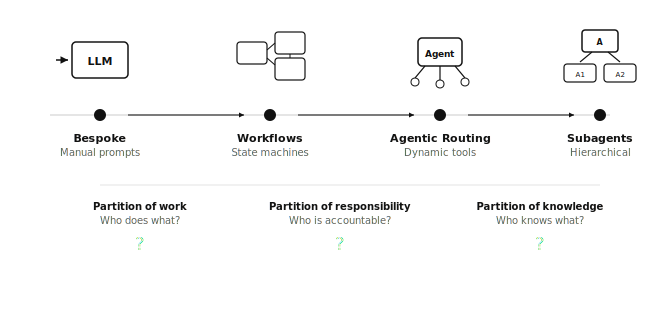
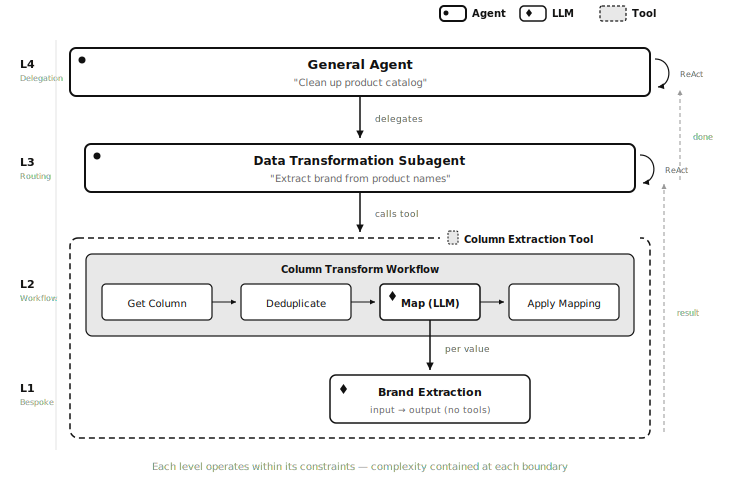
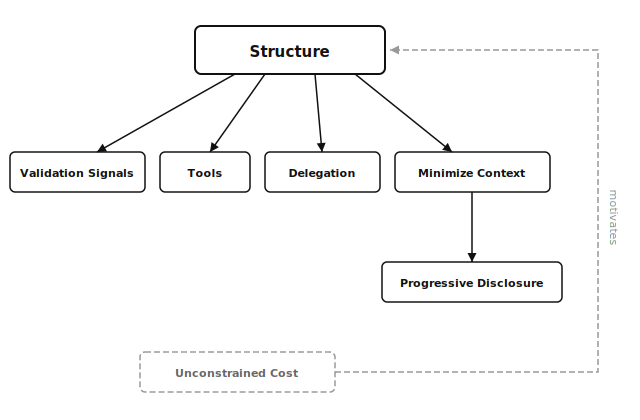
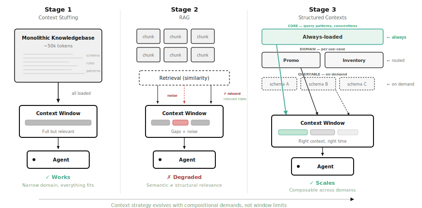
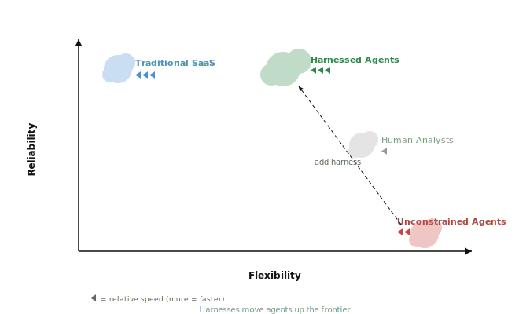
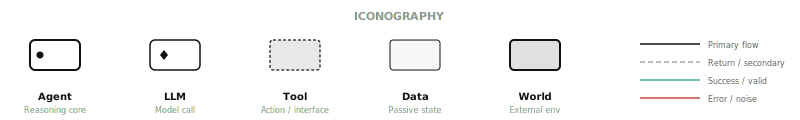
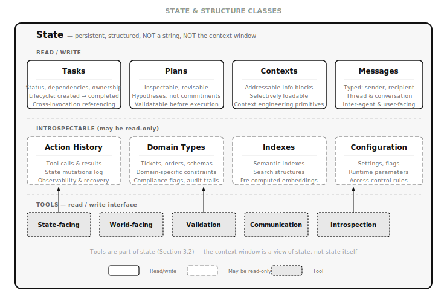
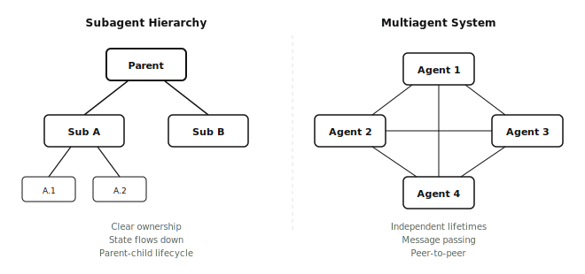

On Building Reliable Agents
The individual principles behind reliable agents are not new—and the field knows it. Anthropic's "Building Effective Agents" [3] established that workflows and constraints outperform unconstrained autonomy. Their subsequent work on context engineering [90] and agent harnesses [91] codified progressive disclosure and structured state management. OpenAI's practical guide [9] converges on the same patterns. DSPy [92] formalized the shift from prompting to programming. The Bitter Lesson discourse [93][95] has been applied specifically to agent scaffolding. Context engineering as a discipline has its own rapidly growing literature [30][94]. The building blocks are well-understood.
What has been missing is a coherent mental model. The field suffers from widespread semantic confusion: "agent," "tool," "context," "state," "memory," and "planning" are used inconsistently across frameworks, papers, and products—often meaning different things in different contexts, or conflating concepts that should be distinct. LangChain's "agent" is not Anthropic's "agent" is not a reinforcement learning "agent." A "tool" in one framework is a "skill" in another and an "action" in a third. "Memory" might mean the context window, a vector store, a conversation log, or persistent state, depending on who is speaking. This confusion is not merely terminological—it leads to architectural mistakes, because builders inherit muddled abstractions and wire systems together without a clear picture of what each component is and how it relates to the others.
This paper attempts to cut through that confusion by proposing a first-principles mental model for thinking about agents: a dependency chain of principles that explains not just what to do, but why each principle follows from the others, and when the tradeoffs justify the investment. The existing literature offers cookbooks of patterns (Anthropic), toolkits of abstractions (LangChain, DSPy), and collections of best practices (OpenAI). This paper attempts something different: a unified framework with a cost model for deciding when structure is justified, an explicit dependency graph showing how principles build on each other, and a taxonomy of architectural surfaces where constraints can be applied.
This paper proposes Structured Agency: a framework for building harnesses around LLM-powered agents through deliberate constraints, external validation, and composable tooling. The agents that result are structured agents—systems that trade unconstrained flexibility for reliability, observability, and predictable behavior. The framework is grounded in three years of experience building agents across production systems at kuona.ai, academic research, and personal projects, informed by industry analysis, and organized as a dependency chain of principles where each builds on the last. The naming and formalism are my own and evolve over time.
1. Introduction
1.1 The Current State of Agents
The past year has seen an explosion in agentic systems. Coding agents—Claude Code [7], OpenAI Codex [84], GitHub Copilot [85], Google Jules [86], Devin [87]—now routinely navigate codebases, write code, and run tests autonomously. Computer-using agents like OpenAI Operator [88] and Google Mariner [89] interact with GUIs through screenshots and virtual input. Multi-agent research systems [24] coordinate teams of specialized subagents. General-purpose agents like Manus achieved state-of-the-art on general assistant benchmarks [66] before being acquired by Meta. Interoperability protocols—MCP [46], Agent2Agent [90], Agent Skills [91]—have standardized how agents connect to tools and to each other. These systems, along with foundational research [6][3][9], have converged on several insights that, taken together, motivate the framework proposed in this paper.
1. Agents thrive with reliable, small-scoped tools which are composable [1][2][3][4].
The UNIX design philosophy aligns remarkably well with this principle [5]. Tools like `grep`, `cat`, and `sed` have become commonplace in the most capable agents—not by accident, but because they embody:
- Single responsibility
- Composability
- Predictable behavior
- Simple interfaces
The convergence on composable tooling has gone beyond individual systems to produce open standards. The Model Context Protocol (MCP) [46] standardized how agents connect to tools through typed interfaces; Google's Agent2Agent Protocol (A2A) [90] standardized inter-agent communication through capability discovery ("Agent Cards"); Anthropic's Agent Skills specification [91] standardized reusable capability packages. By late 2025, MCP alone had 97M+ monthly SDK downloads and adoption from every major provider. This is not accidental—it reflects a structural insight: composable, well-defined tool interfaces are the foundation of reliable agent behavior.
2. The most effective agents exploit the underlying structure of their problem domain.
Composable tools are the mechanism, but the deeper pattern is that capable agents don't treat the world as unstructured text to reason over—they navigate the domain's own organization. Every major coding agent—Claude Code [7], Codex [84], Copilot [85], Jules [86], Cursor, Amazon Q—exploits the inherent structure of code: grepping file trees, following import graphs, reading type signatures, querying language server protocols [81][82]. A database agent that queries schemas before writing SQL exploits the structure of relational data. In each case, effectiveness comes not from raw reasoning over tokens but from leveraging domain structure that already exists—or, where it doesn't exist, creating it (Section 3.4).
3. External systems validate better and cheaper than models self-assess [17][18].
The field has converged on outsourcing verification to purpose-built external mechanisms—compilers, linters, test suites, schema validators, rule engines—not because models cannot self-correct, but because external validation provides reliable, deterministic signals. This pattern now appears at every scale: OpenAI Codex [84] runs in sandboxed containers with internet disabled (constraint through isolation), Operator [88] hands control to users when uncertain (human-in-the-loop validation), Meta's LlamaFirewall [93] provides guardrails as a separate system independent of the agent's reasoning, and Anthropic's harness patterns [92] use progress files and git checkpoints as external recovery signals for long-running agents. Section 2.1, External Validation establishes the principle; Section 2.3 makes the economic case.
4. The context window is scarce working memory, not a knowledge store [25][26][27].
The most capable production agents deliberately manage what enters the context window, when, and in what form. The discipline of context engineering [30]—selecting, ordering, representing, and timing the information an agent operates on—has emerged as a named practice precisely because context quality matters more than context quantity, and irrelevant context actively degrades performance. By mid-2025, the term had been popularized by Shopify CEO Tobi Lutke and Andrej Karpathy, reflecting a shift in the field's understanding: reliability comes not from better prompts but from better-structured context (Section 2.2).
1.2 Evolution of Agentic Workflows

The evolution of agentic capabilities has progressed alongside model improvements [3][8][9][10]:
- Bespoke tasks with LLMs → Handcrafted prompts with manual routing
- Workflows with state machines → Deterministic transitions between states
- Agentic routing → Dynamic decision-making with tools
- Subagent delegation → Hierarchical task decomposition
Crucially, these levels are not a strict progression where each supersedes the last—they coexist. A production system will typically contain all four: bespoke prompts for well-understood subtasks, state-machine workflows where determinism is needed, agentic routing for flexible decision-making, and subagent delegation for complex decomposition. In my own work, all of these coexist to form reliable, cost-effective, and flexible systems. The right level depends on the task and domain, not on the system's overall sophistication. A useful heuristic: the lower on this curve a task sits, the more that context stuffing and simple tool design dominate; the higher, the more that deliberate context engineering and structural harnesses become necessary.
Practical Example — All Four Levels in One System
A system I built at kuona.ai illustrates how all four levels coexist within a single task execution. The system is a general business agent that, among other capabilities, can delegate data transformation work to a specialized subagent.

A user asks the general agent to clean up a product catalog. The agent determines that a column of free-text product names needs to be transformed into standardized brand categories. Here is what happens:
Level 4 — Subagent delegation. The general agent delegates the transformation task to a specialized data transformation subagent, passing a structured instruction: "Extract the brand from these product names."
Level 3 — Agentic routing. The data transformation subagent operates in a ReAct loop. It dynamically selects which tool to call based on the instruction—in this case, a column transformation workflow that works on a Table (a structured class, see Section 3.2) and targets a specific column.
Level 2 — Workflow with deterministic transitions. The column transformation tool is itself a workflow—a state machine that orchestrates a fixed sequence of operations: (1) obtain the column values, (2) deduplicate to extract unique values, (3) run a map operation over the unique values using an LLM, (4) apply the resulting mapping to the entire column to produce a derived column.
Level 1 — Bespoke LLM prompt. Inside the map operation, a purpose-built prompt receives each unique product name and extracts the brand. This is a single-purpose, well-scoped LLM call with no tool access and no agentic behavior—just input → output.
The workflow completes, producing a new "brand" column. Control returns to the ReAct agent, which may perform additional transformations. When the subagent finishes, control returns to the general agent, which continues with the next business task.
Note what happened: a single user request traversed all four levels of the evolution curve. The bespoke prompt didn't need tools. The workflow didn't need agentic routing. The ReAct agent didn't need to understand the workflow's internals. And the general agent didn't need to know how brand extraction works. Each level operates within its appropriate constraints, and the hierarchical structure ensures that complexity is contained at each boundary.
This progression reveals three fundamental questions that any agentic system must answer:
- Partition of work: Who does what work?
- Partition of responsibilities: Who is accountable for what outcomes?
- Partition of knowledge: Who knows what context?
Counterpoints & Discussion
The "small, composable tools" thesis is not without criticism. Research suggests that tool overload—having too many fine-grained tools—can increase decision friction and hurt selection accuracy [68][69]. LlamaIndex (2024) notes that fine-grained decomposition creates an increased burden on less-capable models [70]. The UNIX "do one thing well" metaphor may not map cleanly to LLM tool selection, where the cost of choosing between many similar tools can outweigh the benefits of composability.
2. Core Principles
Structure, in this framework, is any pre-computed organization that reduces the space an agent must navigate — whether designed by humans, derived automatically from previous usage, or produced through optimization. It is the opposite of "let the model figure it out from scratch." Structure takes many forms:
- Domain structure — Encoding the problem domain: schemas, entity relationships, business rules, valid states. The domain has inherent structure; the harness captures it rather than asking the model to rediscover it.
- Cognitive structure — Human-aligned reasoning patterns: decomposition, planning, step-by-step processes, hierarchical thinking. Structure that mirrors how humans organize complex work.
- State structure — Typed, addressable representations rather than raw text. Tasks, contexts, plans, action history as first-class objects with lifecycle—not strings in a conversation. This is central to the framework: unified state is the substrate on which all other structure operates.
- Constraint structure — Boundaries that reduce the action space: output schemas, tool interfaces, validation rules, privilege boundaries. The walls that keep the agent on track.
- Compositional structure — How work is partitioned across agents, delegation boundaries, hierarchy. The organizational chart of the system.
- Information structure — How context is organized, layered, and disclosed. What the agent knows, when it knows it, and in what format.
A clarification on what structure is not. By "structure" this paper does not mean the old-style prescription of rigid multi-agent workflows — "build subagent A for extraction, subagent B for validation, subagent C for formatting, connected by a fixed DAG." Any practitioner who has built agents at scale reaches the same conclusion: more flexibility, more shared context, and fewer hard boundaries produce the most general and frictionless designs. Cognition AI's argument against multi-agent architectures [50] captures an intuition widely held in the field — that parallelism boundaries and context isolation often create more friction than they resolve. But the conclusion should not be "therefore, remove all structure." Agents that are both reliable and fast can shed the old rigid context boundaries while introducing more precise structures — structures that enable better orchestration, lower latency, and capabilities that exceed the cognitive ceiling of the base model alone. Parallelism is an incredibly useful concept within agentic systems, and context boundaries are powerful — as long as they can be gracefully bypassed when the task demands it. The structure advocated here is as much about progressive disclosure as it is about alignment: the agent can always explore beyond what is initially provided, but certain task boundaries, tool constraints, and information layers are simply smart design. They don't cage the agent — they give it a head start.
Most of these principles are individually well-established—constraint satisfaction, external validation, progressive disclosure, and hierarchical decomposition appear across the existing literature on agent design [3][9][90]. The contribution of this section is not the individual principles but their organization into a dependency chain: each principle follows logically from the previous, and the chain as a whole provides a framework for reasoning about when and why to invest in structure, not just what structure to apply.

2.1 Structure Reduces Problem Space
This is the foundational principle from which most others follow. Constraints:
- Enable validation signals (checkable boundaries)
- Reduce problem spaces (fewer paths to explore)
- Improve computational economy (less work per step) [14]
- Prevent error propagation between tasks (isolation)
- Enable effective delegation (clear boundaries for splitting work across agents—see Section 3.5 for the full treatment)
External Validation Signals
Once a system is structured, its boundaries become checkable—which is what enables external validation.
Examples:
- Code linting and compilation
- Rule-tracking systems
- Formal plan verification [19]
- World-model validation
- External test suites
Why this matters: Validation signals allow agents to course-correct [20]. Crucially, these constraints should stem from mechanisms OUTSIDE the agent to form genuine boundaries.
Counterpoints & Discussion
Recent work challenges the strict necessity of external validation. Kumar et al. [21] achieve significant gains on MATH benchmarks through self-correction via reinforcement learning without external feedback. Intrinsic self-critique methods [73] have achieved strong results on planning benchmarks without external verifiers. However, the consensus remains that external feedback is more reliable for production systems [17][18].
Tools Enable Hierarchical Reasoning
Structure, concretely applied, takes the form of tools—pre-built abstractions that encapsulate solved problems [22][23].
Principle: Delegate reasoning to higher-level abstractions through tools.
Even when a model could solve a task without tools, well-designed tools provide:
- Hierarchical reasoning → No need to redo solved problems
- Predictable outputs → Pre-validated, well-understood behavior
- Battle-tested reliability → Hardened by previous use cases
Counterpoints & Discussion
Tam et al. [15] show that strict format constraints can degrade LLM reasoning performance—models forced into rigid output schemas sometimes sacrifice accuracy. Park et al. [16] demonstrate that grammar-constrained decoding distorts probability distributions. Banerjee et al. [71] propose alternating constrained and unconstrained generation as a middle path. More broadly, the Bitter Lesson argument [72] suggests that hand-crafted structure will eventually be superseded by scaling compute and data.
Practical Example — Hierarchical Reasoning Done Right: Entity Semantics Search
At kuona.ai, agents need to search across user catalogs, ontologies, and domain-specific entities — product hierarchies, promotional categories, store groupings — to answer business questions. A naive approach would have the agent reason over raw catalog data at query time, parsing thousands of entries to find semantically relevant entities. This is exactly the kind of solved problem that tools should encapsulate.
Instead, we built a decoupled semantic indexing system: an asynchronous agent that pre-processes user catalogs and ontologies into task-specific semantic databases. This agent runs offline, building structured indexes that capture entity relationships, synonyms, hierarchical groupings, and domain semantics. The main agent never sees the raw catalog data — it calls a search tool that queries these pre-indexed structures.
The search tool itself calls a workflow underneath — an agentic search over the semantic databases — but from the main agent's perspective, it is a single tool call: "find entities matching this concept." The hard reasoning (understanding what "premium beverages" means across a retailer's specific product taxonomy) has been solved offline and baked into the index. The main agent reasons at a higher level: which entities to search for, how to combine results, and how to use them in downstream queries.
Why this works as hierarchical reasoning: The semantic indexing agent solves entity understanding once. The search tool encapsulates that solution. The main agent delegates a narrow, well-defined task — semantic entity lookup — to a pre-built abstraction, and gets back structured, validated results. Without this tool, the agent would need to reason over raw data on every query, multiplying both latency and error surface. With it, the agent operates on pre-solved semantic understanding, focusing its reasoning capacity on the actual business question rather than on entity resolution.
Practical Example — When Tools Are Missing: The LIDA Visualization Trap
An earlier kuona.ai system attempted autonomous visualization generation inspired by Microsoft Research's LIDA [96]. The initial vision was full autonomy: a user asks a question, the system produces a correct visualization without human involvement, using LLM-driven code generation to produce arbitrary plots.
The system worked end-to-end, but it was unreliable. Models generated syntactically valid plotting code that made poor visualization choices — mishandling outliers, selecting inappropriate chart types, producing unreadable scales. The initial assumption was that better prompts or larger models would fix these surface-level issues. That assumption was wrong. The problem was architectural: arbitrary code generation for visualizations required visual reasoning that language models fundamentally lacked. No amount of prompt engineering could bridge that gap.
The fix was to introduce tools. Instead of generating free-form plotting code (reasoning from scratch every time), the system was redesigned around a curated set of visualization templates with well-defined configurations. The agent's role shifted from "generate anything" to "route and parameterize the right visualization." These templates were the missing hierarchical abstraction — pre-built tools that encapsulated solved visualization problems (how to handle outliers, how to scale axes, how to label series).
What was lost: fine-grained control over custom plots, the ability to add arbitrary annotations, and any visualization outside the template library. What was gained: accuracy went from ~70% to ~95%, failures became predictable, and every visualization followed consistent design principles — a unified output language that emerged precisely because the scope was constrained. A second tradeoff followed: rather than adding retry loops to chase the last 5%, the interface was redesigned to give users direct control when a visualization was flagged as low quality. What felt like admitting defeat on the autonomous vision became the feature users valued most — predictable reliability with escape hatches.
The lesson for hierarchical reasoning: The original system asked the agent to reason from first principles about visual design on every invocation. The fix was to package that reasoning into tools — constrained, validated, battle-tested abstractions. The agent stopped solving visualization problems and started selecting pre-solved solutions. Reliability came not from improving the model's raw capabilities, but from redefining the task boundary so the agent reasoned at the right level of abstraction.
Structure also carries implicit alignment—a point developed fully in Section 3.9.
2.2 Context Engineering
Structure tells you what's relevant and what isn't—which leads to the operational principle of deliberately managing what enters the context window.
The field has converged on the term context engineering [30] to describe this practice, with substantial recent treatment by Anthropic [90], Martin [94], and others. The discipline encompasses designing the full informational environment an agent operates within—not just what's in the prompt, but what's retrieved, when it's loaded, how it's structured, and what's excluded. Context engineering subsumes prompt engineering the same way software architecture subsumes writing functions. The principles below are well-established in this literature; our contribution is connecting them to the dependency chain—showing how context engineering follows from structure (Section 2.1) and feeds into the cost model (Section 2.3).
Principle: The context window is the agent's working memory. Structure it deliberately [25][26][27][28].
This is where the structure principle (Section 2.1) becomes operational. Structure tells you what information is relevant for a given task, which boundaries separate concerns, and which contexts belong to which agents. Without structure, context engineering degenerates into guesswork—stuffing tokens and hoping the model finds what it needs.
What context engineering controls:
- Selection → What information enters the context window (and what doesn't)
- Ordering → How information is sequenced (recency, relevance, dependency)
- Representation → How information is formatted (raw text, summaries, structured schemas)
- Timing → When information is loaded (upfront, on-demand, forced)
Research consistently shows that context quality matters more than context quantity. Irrelevant context actively degrades performance [26], length alone hurts even with perfect retrieval [27], and models exhibit predictable attention patterns that structured context can exploit [25].
Progressive Disclosure
The primary mechanism for effective context engineering: don't load everything upfront—reveal information incrementally as needed [31][32].
Principle: Reveal information incrementally as needed.
This prevents context overload while maintaining access to necessary information. The parallel to cognitive science is striking: Miller's "Magical Number Seven" [33] and Baddeley's working memory model [34] both suggest that human cognition benefits from bounded information flow. Packer et al. [35] explore analogous memory management for LLMs in MemGPT.
Progressive disclosure is not the same as minimizing context. Sometimes the right context engineering decision is to load more—context stuffing remains highly effective when the corpus fits and is relevant. Progressive disclosure is the general pattern; context stuffing is the trivial special case where everything fits and everything is relevant.
Practical Example — From Context Stuffing to Progressive Disclosure
The same kuona.ai system from Section 1.2 illustrates how context strategies evolve—not because of context window limits, but because of compositional demands. The system is an NLP-to-SQL agent that performs promotional postmortem analysis: a user asks a business question, and the agent translates it into SQL queries against the company's data warehouse.

Stage 1: Context stuffing (worked well). The initial version used a single ~50k token knowledgebase file that mixed domain knowledge (schema definitions, business rules, metric calculations) with task knowledge (query patterns, SQL dialect conventions, common joins). Context stuffing worked because the domain was narrow and bounded—promotional analysis only. The corpus fit, everything was relevant. This is the trivial special case.
Stage 2: RAG (degraded performance). When exploring optimization, RAG was tried. It introduced latency, sometimes missed relevant tables or columns (low recall), and sometimes injected semi-relevant but confusing context (noise). Maximizing recall recovered performance and achieved some savings over stuffing everything, but the fundamental issue remained: the retrieval mechanism couldn't distinguish what was structurally relevant from what was semantically similar. A table's schema definition might not be semantically close to the user's question, but it's structurally essential for writing a correct query.
Stage 3: Structured contexts (enabled scaling). Scaling from promotional analysis to general business use cases forced the real solution. The monolithic knowledgebase got split into structured contexts with different treatment:
- Always-loaded context: Core DB query patterns and system conventions—how queries must be built, SQL dialect rules, output formatting. Loaded on every invocation.
- Domain contexts: Per-domain knowledge (promotional metrics vs. inventory vs. finance)—loaded based on task routing, so the agent gets the right business framing for its current task.
- Queryable context: Domain-specific schema details—retrieved on demand when the agent needs to inspect a table's structure or understand a column's semantics.
This is progressive disclosure in practice: the agent always has the foundation, gets the domain framing for its current task, and can reach for details as needed.
The evolution from stuffing to structure wasn't driven by context window limits. The 50k tokens still fit. It was driven by the need for composability—the same agent serving multiple domains required the context to be engineered, not just loaded.
Counterpoints & Discussion
Long-context models consistently outperform RAG in average performance when sufficient compute is available [29]. Databricks (2024) shows that corpora under 2M tokens can be fed directly without retrieval. This suggests that aggressive context minimization is often counterproductive—more context, properly structured, yields better results than aggressive filtering. The real skill is knowing what to include, not how little you can get away with.
2.3 The Cost of Unconstrained Systems
The existing literature is clear on what structure to apply but largely silent on when the investment is justified. Anthropic advises "find the simplest solution possible" [3]; OpenAI recommends "an incremental approach" [9]. These are useful heuristics but not decision frameworks. This section proposes a formal cost model for reasoning about the structure investment—arguably the most distinctive contribution of this paper.
What happens when you ignore structure? A fully unconstrained agent (no structure, no verification, no premade tools, no limitations) might solve a problem, but at what cost? To reason about this clearly, it helps to think in terms of two competing cost functions.
The Two Cost Functions
Every agentic system implicitly makes a tradeoff between two costs:
Cost of Structure (C_s): The upfront and ongoing investment in constraints.
- Design cost → Engineering time to define tools, schemas, validation rules
- Maintenance cost → Keeping structure updated as requirements evolve
- Flexibility cost → Tasks that don't fit the structure require workarounds
- Runtime overhead → Validation checks, schema enforcement, plan verification
Cost of Failure (C_f): The expected cost when things go wrong.
- Direct cost → Wasted tokens, API calls, compute on failed paths
- Recovery cost → Replanning, rollback, state repair, human intervention
- Propagation cost → Downstream errors caused by upstream failures
- Irreversibility cost → Actions that cannot be undone (emails sent, data deleted, state corrupted)
Structure is economically justified when the reduction in expected failure cost exceeds the cost of imposing it: C_s < ΔC_f × P(failure). This is the economic argument for why structure motivates the rest of this paper.
Error Compounding in Multi-Step Tasks
The most powerful argument for structure is probabilistic. In a multi-step task, per-step reliability compounds multiplicatively:
| Per-step success rate | 5 steps | 10 steps | 20 steps |
|---|---|---|---|
| 90% (no structure) | 59% | 35% | 12% |
| 95% (light structure) | 77% | 60% | 36% |
| 99% (heavy structure) | 95% | 90% | 82% |
A 5-percentage-point improvement in per-step reliability (90% → 95%) nearly doubles the success rate over 10 steps. This is why structure matters most for long-horizon tasks—even small reliability gains at each step have dramatic compound effects.
Corollary: The longer the task horizon, the more structure is justified, because the compounding penalty for per-step unreliability grows exponentially. This also connects to the redundancy principle (Section 2.5, Redundancy): having multiple paths to success at each step is one mechanism for increasing per-step reliability.
The Validation Cost Asymmetry
A key economic property of agentic systems: validation is almost always cheaper than inference.
| Operation | Token cost | Latency | Reliability |
|---|---|---|---|
| Compiler check | 0 tokens | ~ms | Deterministic |
| Linter/formatter | 0 tokens | ~ms | Deterministic |
| Test suite | 0 tokens | ~seconds | Deterministic |
| Schema validation | 0 tokens | ~ms | Deterministic |
| Model self-assessment | 100s–1000s tokens | ~seconds | Probabilistic |
| Model re-reasoning | 1000s+ tokens | ~seconds | Probabilistic |
When external validation is available, it dominates self-assessment on every dimension: cheaper, faster, and more reliable. This asymmetry is what makes the external validation principle (Section 2.1, External Validation) not just theoretically sound but economically compelling—delegating verification to purpose-built external mechanisms is almost always the right trade.
When Structure Doesn't Pay
Structure is not always justified. The cost model identifies conditions where flexibility wins:
- One-off tasks → C_s cannot be amortized across multiple executions
- High novelty → The task space is too unpredictable to constrain usefully
- Cheap failure → C_f is low (reversible actions, no downstream consequences, low token cost)
- Rapidly evolving domains → Maintenance cost of structure exceeds its benefits
This connects directly to the Flexibility-Reliability Tradeoff (Section 2.4): the maturity curve is really a curve of amortized structure cost declining as task frequency and predictability increase.
Counterpoints & Discussion
The compounding reliability argument assumes step independence—that per-step success rates are uncorrelated. In practice, failures often cluster: a single misunderstanding early in a task can cascade into correlated failures across all subsequent steps, making the effective compounding worse than the independent model predicts. Conversely, agents that self-correct can exhibit positive correlation where early successes build context that improves later steps. The simple multiplicative model is useful as a mental framework but may over- or underestimate actual failure rates depending on the domain.
Practical Example — What You Optimize For Changes Everything
The cost model above is deliberately abstract — C_s and C_f are expressed in generic "cost" without specifying what that cost measures. This is intentional: the dominant cost dimension varies across systems, and the structural decisions that follow from the model change accordingly. The framework is a general heuristic; the instantiation is domain-specific.
When latency is the cost function. At kuona.ai, latency is one of the north-star metrics — particularly for certain tasks and subagents in the interactive query pipeline, where the system serves business analysts who ask questions and expect answers in seconds, not minutes. (Correctness is an even higher priority — see below — but for the latency-sensitive surfaces, speed dominates the structural decisions.) In this regime, C_f is measured primarily in time: a failed step triggers a retry loop, each retry adds seconds of model inference, and users abandon queries that take too long. Structure is justified when it eliminates retry cycles — a validation check that takes 5ms and prevents a 3-second retry loop is an obvious win. This shaped every architectural decision: pre-computed semantic indexes (Section 2.1, Tools) exist because entity resolution at query time added unacceptable latency, visualization templates replaced code generation because retrying failed plots was too slow, and context was structured by change rate (Section 3.1) because KV cache reuse cut per-turn inference time. The cost model didn't say "add structure everywhere" — it said "add structure wherever it eliminates a latency-visible failure mode."
When inference cost is the cost function. A different system — a batch processing pipeline that runs overnight, classifying and routing thousands of documents — operates under a completely different C. Latency is irrelevant; the pipeline has hours. But every token costs money, and at scale, wasted tokens dominate the budget. Here, C_f is measured in dollars: a failed classification triggers a re-inference on a document that might be 50k tokens, and propagation cost means a misclassification early in the pipeline causes expensive downstream reprocessing. Structure is justified when it prevents token waste — a lightweight classifier that routes documents to specialized prompts (cheaper, shorter) instead of feeding everything to a single expensive prompt, or a schema validator that catches malformed output before it propagates to the next stage. Retry loops are acceptable (time is cheap); token-burning retry loops are not.
When correctness is the cost function. At kuona.ai, after the query system retrieves data, a separate system answers user questions grounded on those results. In this regime, C_f is measured in business risk: a single hallucination or misread data point in an answer can drive decisions worth millions of dollars, and the error may take months to surface. A business analyst who trusts an AI-generated insight about promotional effectiveness, inventory allocation, or pricing strategy acts on it immediately — and by the time the mistake is discovered, the downstream damage is already done. This is why the system was built around a strict grounding architecture: every claim in a user-facing answer must trace back to retrieved data, every numerical assertion is cross-validated against the query results, and the system refuses to speculate beyond what the data supports. Correctness in the answer-crafting layer is the north-star metric — not latency, not token cost, but whether the answer faithfully represents the underlying data. The cost model says "C_s is almost always less than C_f" because C_f is catastrophic and delayed. The "When Structure Doesn't Pay" conditions rarely apply — even one-off analyses need grounding structure because cheap failure doesn't exist when the wrong number can redirect a client's strategy.
C can vary within the same system. At kuona.ai, the query system is multi-tenant across different database backends. When the agent queries cloud data warehouses and big data infrastructure, failures are expensive: queries take seconds to minutes, consume compute resources, and a malformed query against a production warehouse can time out, lock resources, or return misleading partial results. In this regime, strict query planning and validation paid for themselves immediately — a planning layer that validated query structure, checked schema compatibility, and verified join paths before execution prevented costly round-trips to remote infrastructure. But the same system also handles small datasets that fit in the agent's local environment via DuckDB. Here, the entire cost calculus flips: queries execute in milliseconds against an in-process database, failures are instantly visible and instantly retryable, and there are no remote resources to waste. Errors are cheap. For DuckDB queries, the planning layer was dropped entirely — the agent generates and executes queries directly, iterating on failures at negligible cost. The same system, the same agent, two completely different structural decisions — because C_f for a failed cloud warehouse query and C_f for a failed DuckDB query differ by orders of magnitude.
The general heuristic: Before applying the cost model, identify what your system's C actually measures. The same architectural decision — adding a validation checkpoint, pre-computing an index, constraining output format — can be clearly justified, clearly wasteful, or somewhere in between, depending entirely on which cost dimension dominates. The model is universal; the parameterization is not.
The conditions above—when structure pays and when it doesn't—are not binary. They form a spectrum, which the following section formalizes.
2.4 The Flexibility-Reliability Tradeoff

Any process an agent works on exists on a maturity curve [3][36][37]:
- One-off tasks → Require flexibility and exploration
- Mature processes → Benefit from rigidity, predictability, and structure
While some agents work well as completely flexible, reliability and low latency come from structure. Agents built with these structural harnesses—structured agents—occupy the upper-right of this space: high flexibility through LLM reasoning, high reliability through external constraints.
Key insight: Even with increased agentic capabilities, reducing the problem space and "degrees of freedom" leads to reduced latencies and improved reliability. The structured agency approach is fundamentally about moving agents upward on this chart by adding harnesses rather than restricting what they can do.
Designing for Harness Obsolescence
The flexibility-reliability tradeoff has a temporal dimension that is central to how structured agency should be practiced: build harnesses expecting them to weaken over time.
The Bitter Lesson has been applied directly to agent scaffolding by Martin [93], Bowne-Anderson [95], and others, with the practical observation that agent harnesses must be "repeatedly simplified as models improve"—that teams at Anthropic and elsewhere rebuild their agent infrastructure on the order of months, not years. We agree with this framing and formalize it as a design principle: harness obsolescence is not a failure of design but a feature of well-designed systems.
Current harnesses address current model limitations. State management compensates for the fact that models lack persistent memory across invocations. Context-window-as-working-memory harnesses (progressive disclosure, forced contexts, retrieval mechanisms) exist because attention doesn't scale perfectly and context is expensive. Structured output schemas exist because models don't always produce well-formed output. Validation signals exist because models can't yet reliably self-verify. Each of these is a response to a specific limitation—and each limitation is on a trajectory of improvement.
As models improve, some harnesses will naturally weaken. A model with perfect self-verification needs fewer external validation signals. A model with reliable structured output needs less schema enforcement. A model with effectively infinite context and perfect attention needs less aggressive progressive disclosure. New architectures may overcome the need for external memory entirely, collapsing the state management harness into the model itself. The Bitter Lesson predicts exactly this trajectory: capabilities that were once impossible without external scaffolding get absorbed into the model itself.
But even as harnesses weaken, domain-specific structured state remains economical. The latency cost of having a model re-derive a customer's order history from raw conversation logs—every invocation—will always exceed the cost of maintaining that information in a structured state object, regardless of how capable the model becomes. The cognitive cost (in tokens) of navigating an unstructured environment will always exceed the cost of navigating one where the structure is pre-computed. This is the same argument that applies to software engineering generally: we don't rewrite parsers from first principles every time we need to parse JSON, even though we could. Structured agency's harnesses occupy this same economic niche—they are amortized investments in structure that pay dividends across invocations. The right design principle, then, is not "build permanent harnesses" but "build harnesses with a clear understanding of which limitations they address and how those limitations are evolving." This is the temporal dimension of the flexibility-reliability tradeoff: the optimal point on the curve shifts over time as model capabilities advance, and well-designed structured agents shift with it.
Commoditizing Intelligence
Section 2.4, Harness Obsolescence argues that the harness should survive model improvement—the temporal axis. There is a second axis: the harness should survive model substitution.
Principle: Treat the model as a replaceable commodity. The harness is the stable layer; the intelligence provider is a variable.
The economic realities of model serving make this more than an architectural nicety. Providers compete on price, latency, and capability across different task profiles. A model that is cost-optimal for structured extraction may not be the best choice for open-ended reasoning. A harness that abstracts over the intelligence provider can route tasks to the appropriate model—or simply to the cheapest one that meets the reliability threshold. This is the same economic logic that drives cloud infrastructure: you don't build your application around a specific EC2 instance.
This connects directly to the cost model (Section 2.3): different models align with different cost functions. A task where C_f is measured in risk — the grounded answer system from Section 2.3 — justifies routing to the most capable (and expensive) model, because the cost of a hallucination dwarfs the inference premium. A task where C_f is measured in latency — entity resolution at query time — favors the fastest model that meets the accuracy threshold, even if a more capable model would be marginally better. A task where C_f is measured in dollars — high-volume classification or routing — favors the cheapest model that clears the reliability bar. Model commoditization is not just about substitution resilience; it is about matching intelligence cost to task risk. The harness that treats models as interchangeable also enables the harness that routes each task to the model whose cost profile best fits its C.
The robustness argument is equally compelling. Provider outages, rate limits, and deprecations are operational realities. A harness designed around model interchangeability treats these as transient conditions rather than architectural crises—if one provider fails, the system falls back without adaptation.
This principle extends down to the implementation level. Frameworks like PydanticAI, LangChain, and similar orchestration layers earn their value not primarily through abstraction but through the operational niceties that make model commoditization practical:
- Retry loops with exponential backoff for transient provider errors (rate limits, timeouts, 5xx responses)
- Structured output validation with automatic retries — when the model produces malformed JSON given a schema constraint, the framework re-prompts rather than failing. This is a harness that compensates for a model limitation (unreliable structured output), exactly as Section 2.4, Harness Obsolescence describes.
- Provider-agnostic interfaces that allow swapping the underlying model without changing application code
- Streaming, token counting, and cost tracking as cross-cutting concerns independent of which model is being called
Importantly, benefiting from these niceties does not require buying into any framework's full ecosystem or opinionated agent architecture. The retry loops, structured output validation, and provider abstraction are composable building blocks—you can use them to construct your own harnesses without adopting the framework's opinions about how agents should be structured. The value is in the operational primitives, not the orchestration philosophy.
The key insight is that these primitives are themselves harnesses in the structured agency sense. They sit between your application logic and the intelligence provider, adding structure (retries, validation, provider abstraction) that makes the system more reliable. The model produces the intelligence; the harness ensures that intelligence is delivered reliably, affordably, and in the right format.
Counterpoints & Discussion
Model-agnostic design can paper over meaningful capability differences. Not all models handle tool calling, structured output, or multi-turn reasoning equally—abstracting over these differences can lead to lowest-common-denominator designs that fail to exploit what a specific model does well. Some architectures (like Claude's extended thinking or OpenAI's o-series reasoning) offer unique capabilities that a generic interface cannot expose.
2.5 Practical Corollaries
Redundancy is a Feature
Rationale: From a probabilistic argument, having multiple paths to success increases the likelihood of task completion. Relying on a single tool (unless it's ubiquitous) creates fragile systems.
Examples:
- Multiple retrieval mechanisms (grep, semantic search, full-text search)
- Multiple communication channels
- Fallback tools when primary tools fail
Stress Strengthens a System
Principle: Reuse agents and components across contexts. Shared stress surfaces harden them.
Rationale: A component used in one context is fragile — its edge cases are discovered only within that context. A component reused across many contexts is stressed from multiple directions, forcing it to become more general, more robust, and more predictable. Stress — the pressure of diverse usage patterns — strengthens a system the same way load testing strengthens infrastructure.
Practical Example — From Monolithic Agents to Reusable Cores
At kuona.ai, an early discovery shaped the entire architecture: designing monolithic agents with all desired capabilities baked in led to brittle code. When agent B needed a capability that lived inside agent A, the result was either duplication (rewriting the capability) or tight coupling (calling into agent A's internals). Both paths created fragility — a change to agent A's prompts or tool configuration would silently break agent B's dependency.
The solution was to structure from the beginning so that the same agents and the same prompts would be reused across as many contexts as possible. A single query agent, with the same core prompt and tool set, serves promotional analysis, inventory questions, and financial reporting. Each new domain that stresses the agent exposes edge cases that, once fixed, benefit every other domain. The agent got stronger as it was reused — more general, fewer blind spots, more predictable failure modes.
A subtlety in how this was achieved: the alternative to reuse is decomposition — splitting capabilities into separate specialized modules. For instance, SQL generation could live in a dedicated subagent that the main agent delegates to. But this creates a more brittle system with more dependencies: the main agent must know when to delegate, the subagent must understand the main agent's context, and the interface between them becomes a failure surface. Instead, the main agent was designed to be reconfigurable — its tool set and directives can be narrowed per invocation. When only SQL generation is needed, the agent is invoked with the SQL tool forced and a directive to return after generating the query. Same agent, same prompt, same battle-tested reasoning — just a narrower scope. This is reuse through reconfiguration, not decomposition through delegation.
These lessons — that reuse hardens components, that monoliths are brittle, and that reconfiguration beats decomposition — heavily influence the formalisms in the taxonomy that follows. The distinction between invocation-level configuration (Section 3.1) and agent identity, the treatment of tools as state that can be added or removed per invocation (Section 3.2), and the composition patterns (Section 3.5) all trace back to this practical discovery.
The Agent Should Know Its Harness
Principle: Design the harness so the agent can introspect it, reason about it, and use it to amplify its own capabilities — not merely be constrained by it.
Rationale: The default framing of structure is restrictive — guardrails, constraints, boundaries, limitations. This framing is incomplete. A well-designed harness is not a cage; it is an exoskeleton. The agent that is aware of its tools, its context boundaries, its validation signals, and its delegation paths can reason about them as resources, not just obey them as rules. The shift is from structure-as-restriction to structure-as-capability.
An agent that knows it has a schema validator can proactively check its own output before submitting it. An agent that knows its context is structured by change rate can decide what to offload and what to keep. An agent that knows it can delegate to a scoped subagent can choose delegation strategically rather than having it imposed. An agent that knows its working memory has been compacted can recognize when it is operating on incomplete information and reach for addressable history. In each case, the harness becomes something the agent uses, not something that uses the agent.
Design implications:
- Make structure visible — Tool descriptions, available contexts, delegation capabilities, and validation mechanisms should be legible in the agent's working memory. The agent should know what it has access to, not discover it by accident.
- Make structure introspectable — The agent should be able to query its own harness: what tools are available, what contexts are loaded, what constraints are active, what has been compacted. Introspection turns the harness from an external imposition into an internal resource.
- Design for leverage, not just compliance — When adding a structural element, ask not just "does this prevent the agent from failing?" but "does this enable the agent to succeed in ways it couldn't without it?" The best harnesses do both.
This principle connects back to the clarification at the opening of this section: structure is not the old-style rigid workflow that constrains the agent into a fixed path. It is the set of capabilities, boundaries, and information architecture that the agent can leverage to reason better, act faster, and recover from errors more gracefully. The agent that understands its own harness is more capable than the unstructured agent — not less flexible, but more powerful.
With the principles established, we now turn to how they manifest concretely in agent design. The taxonomy below maps each principle to the architectural surfaces where harnesses can be applied.
3. Taxonomy of Structured Agents
The structured agency framework decomposes agents into a set of concerns—each representing a surface where harnesses can be applied. This taxonomy describes those surfaces.
The following iconography is used consistently across all diagrams in this paper:

3.1 Agent
Agent — A reasoning core that observes the world through actions and builds an internal state representation.

Borrowing from the reinforcement learning framework [43], and informed by recent surveys on LLM-based autonomous agents [44], we define the following components.
Invocation
Invocation — The period from when an agent "starts up" until it "dies" and stops performing actions.
An agent may persist across multiple invocations with the same state. Each invocation provides specific settings:
- Allowed tools → What actions are permitted
- Initial context → What information to load
- Directives → What goals to pursue
Implementation note: Whether each user input triggers a new invocation (daemon shuts down) or the agent persists across inputs is an implementation detail. The key is distinguishing between invocations and mere instruction reception.
Practical Example — Decoupled Invocations at Kuona
At kuona.ai, we pre-emptively launch agent invocations when leading indicators suggest the agent will be needed—effectively a warm start. The agent is already running when the user message arrives, so it hits the ground running. Earlier versions tied invocation lifetime to user message reception, but decoupling them yielded cleaner semantics:
- Warm starts become natural. The invocation exists before any user input; the first message is just another event.
- Lifecycle is decoupled from message reception. The agent's birth and death are governed by orchestration policy, not by whether a chat message happened to arrive.
- Double-dialing and multiple messages are handled by design. Because message reception is a simple operation within an already-running agent—rather than the trigger that creates it—concurrent or duplicate messages require no special-case handling.
This pattern also enables long-running agent designs where user messages and inter-agent messages flow through the same pathways. We exploit this in Kuona's testing harness, which simulates user trajectories and replays them against production agents—the agent cannot distinguish a synthetic test message from a real user message, because structurally they are identical.
Interruptions as a lifecycle property: Invocations can be interrupted—by the user, by the parent agent, by budget exhaustion, or by a sibling's failure. An invocation that is interrupted mid-execution must leave state in a recoverable condition. This means state must be designed to survive interruption: partial writes should be atomic or rollback-safe, and in-progress markers should be distinguishable from completed ones. Interruption is not an edge case—it is a first-class lifecycle event that the agent model must account for. See Section 3.7 for how interruptions propagate through hierarchical systems.
LLM
LLM — The model that powers the agent's reasoning. The LLM is stateless: it has no memory between calls. All persistence is through working memory and state.
For most current "agentic" systems, the agent is an LLM or derived technology. The LLM is the implementation of the "reasoning core" in the agent definition above — the component that, given an observation of the world (working memory), decides what to do next (tool calls or terminal output).
Statelessness is the fundamental property. Between turns, the LLM retains nothing. No hidden state carries over, no internal "memory" persists. All continuity comes from working memory being re-presented at the start of the next turn. This is why context engineering (Section 2.2) matters so much — the only lever for shaping the agent's reasoning is shaping what it sees.
The LLM is a black box from the harness's perspective. The harness cannot inspect or modify the model's internal reasoning — it can only shape what goes in (context engineering) and constrain what comes out (validation, tool design). This asymmetry is why structure matters: you cannot fix reasoning directly, but you can make correct behavior the path of least resistance through well-designed tools and directives.
Model selection is a design decision. Different invocations, subagents, or tasks can use different LLMs. This connects directly to the cost functions in Section 2.3: risk-sensitive tasks warrant more capable models, latency-sensitive tasks warrant faster models, and cost-sensitive batch tasks warrant cheaper models. A well-structured harness makes model selection a configuration parameter, not an architectural commitment.
The LLM's capabilities — context window size, tool-calling fidelity, reasoning depth — constrain what the agent can accomplish per turn. This is precisely why structure compensates for model limitations: a model that struggles with complex multi-step reasoning in a single pass can succeed when the harness decomposes the problem into simpler per-turn decisions.
Turn
Turn — A single LLM call cycle: the agent receives its working memory as input, generates output (text and/or tool calls), tool calls are executed, results are appended to working memory, and the next turn begins. The turn is the atomic unit of agent computation.
The agent loop can be expressed as: while not done: turn(working_memory) → output → execute tools → update working_memory. Each turn transforms working memory through the LLM's reasoning — the model reads everything in the context window, decides on actions, and the harness executes those actions and appends results for the next turn.
Between turns, the agent does not exist as a process. No computation runs. The harness is what operates at turn boundaries: validating outputs, injecting context, synchronizing state, checking budgets, and deciding whether to continue or terminate the invocation. This is the harness's primary control surface.
Each turn can produce multiple tool calls (parallel tool use) or no tool calls (terminal output that ends the invocation). A turn is to an invocation what a step is to an episode in reinforcement learning — the atomic transition within a bounded execution.
Budget is measured in turns. Turn count is a natural unit for bounding invocation cost — each turn represents an LLM call with measurable token consumption and latency. Token budgets accumulate across turns. This is where the cost functions from Section 2.3 are operationalized: the harness enforces budget constraints at turn boundaries, terminating the invocation when limits are exceeded.
The harness's control surface operates entirely at the turn boundary. Between any two turns, it can: inject context into working memory, force specific tool use, validate or reject the previous turn's output, modify available tools, or terminate the invocation. The agent never "sees" this intervention — it simply receives a new working memory state at the start of the next turn.
Directives
Directives — The goals, constraints, and rules that guide the agent's behavior. These include system prompts, task descriptions, and behavioral guardrails. Directives shape what the agent does and how it does it.
Directives and working memory together determine the agent's behavior at any point in an invocation. Where working memory defines what the agent can see, directives define what the agent should do with what it sees.
Working Memory
Working Memory — What the agent can currently attend to. Working memory is populated by tool results, directive content, and prior conversation. It is finite and transient — information not actively maintained is effectively forgotten.
In LLMs, working memory is realized as the context window — a fixed-size stream of tokens [33][34][35][45]. The context window is an implementation constraint, not a conceptual primitive.
Best practice: Treat the context window as a scratchpad, not permanent storage:
- Don't depend on it for long-term memory
- Successive invocations should preserve only relevant information (through pruning or compression)
- Supplement with forced tool use and external contexts
Caveat: The scratchpad metaphor has limits. LLMs are causal models — each token's representation depends only on the tokens before it, and inference engines exploit this through KV caches and prompt caching. When the prefix of the context window is unchanged across requests, its key-value representations can be reused, dramatically reducing cost and latency. Treating working memory as a freely mutable scratchpad — inserting, reordering, or modifying content near the top — invalidates these caches and forces full recomputation. This creates a practical design constraint: structure context by change rate. Place invariant content (system prompts, tool definitions, stable directives) at the beginning, semi-stable content (loaded contexts, retrieved documents) in the middle, and volatile content (recent conversation turns, tool results) at the end. This layering — invariant → semi-stable → volatile — maximizes cache reuse while preserving the scratchpad's flexibility where it matters most.
Critical distinction: The context window is NOT the agent's state — it is the agent's view of its state. Working memory is populated by tools that load, search, and surface relevant state into the context window. The quality of that population — what gets loaded, when, and in what form — is context engineering (Section 2.2).
Working Memory Management — Context Rot, Compaction, and the Limits of Summarization
Long-running invocations inevitably exhaust the context window. When the agent must transition between tasks or shed old interactions to make room for new ones, the question becomes: what to keep, what to compress, and what to discard.
Context Rot
This is not merely a space management problem. Context rot [97] — the empirically demonstrated degradation in LLM performance as context length increases — means that accumulated content actively harms the agent before the window is even full. Research across 18 models shows that accuracy declines consistently with input length, that irrelevant-but-similar content (distractors) amplifies degradation disproportionately, and that information buried in the middle of the context is recalled far less reliably than content at the beginning or end [98]. Stale tool results, old reasoning traces, and superseded constraints don't just waste tokens — they dilute the model's attention budget and degrade its performance on the current task. This makes working memory management not an optimization but a correctness concern: an agent that retains too much irrelevant context will perform worse than one that strategically forgets.
Lossy Summarization
The common approach is lossy summarization: when transitioning between tasks, generate a compressed summary of past interactions and continue with the new task on a fresh context. This works in the narrow sense — the agent retains a high-level understanding of what happened — but it introduces problems that go beyond simple forgetting. Summarization loses the specific constraints, edge cases, and corrections that accumulated during the prior task. When the agent later re-encounters a related situation, it must re-acquire that context from scratch — a context re-acquisition cost that can exceed the original interaction. Worse, lossy compression runs counter to the prompt caching systems discussed above: rewriting the context prefix invalidates the KV cache, so every compaction triggers a full recomputation of the surviving content. Summarization trades token count for cache efficiency — often a bad trade.
Structured Compaction
Structured compaction offers a better model. Rather than summarizing everything uniformly, exploit the structure of the conversation itself. Claude Code's context compaction, for instance, performs summarization but retains some addressability of previous interactions — before summarizing, it uses the structure of messages to selectively drop previous tool results, intermediate reasoning, and other high-volume low-retention content, while preserving the decisions, constraints, and corrections that are likely to matter later. This is closer to what this framework proposes with Contexts (Section 3.4): working memory content that has been used should be offloaded to addressable, retrievable state rather than compressed into a lossy summary. The agent can then re-acquire specific context on demand rather than carrying everything or losing everything.
Epistemological Humility
The deeper challenge is epistemological. A compacted agent doesn't know what it has forgotten. Without some form of introspection into past interactions — even a structured index of what was discussed, decided, and constrained — the agent cannot know when it is operating on incomplete information. The ideal is epistemological humility baked into the system: the agent should have awareness of the boundaries of its current working memory, know that prior interactions existed beyond what it currently sees, and have tools to reach back into them when needed. If the system provides structured introspection into past interactions within the limits of working memory — a table of contents of what was compacted, what decisions were made, what constraints were established — the agent can adapt: it can recognize when a current task touches on prior context and selectively re-acquire what it needs.
An Open Problem
This remains an open problem. Current systems either summarize too aggressively (losing critical detail) or retain too much (exhausting the context window and accelerating context rot). The structured agency approach suggests a middle path: treat compacted history as a Context — addressable, searchable, and selectively loadable — rather than as a string to be summarized or discarded. The Contexts primitive introduced in Section 3.4 maps cleanly to the concept of external memory in recursive language models — state that lives outside the agent's immediate observation but can be accessed through deliberate action. Minimizing dependency on the context window beyond a certain saturation point will likely be crucial for reliable long-horizon agents, but the design to do this properly remains unclear. The natural approach — recursive decomposition into subagents with scoped contexts — runs into latency costs that quickly exceed acceptable thresholds for interactive systems. Each delegation boundary adds round-trip overhead, and deeply nested decompositions multiply that cost. The tension between context rot (too much in one window) and delegation latency (too many windows) is one of the central unsolved design problems in agentic systems.
3.2 State
State — The totality of an agent's structured understanding of the world. State is all — domain data, configuration, memories, and critically, tools themselves.
Key properties:
- All state changes must go through tools. This is not a stylistic preference — it is a structural requirement. Tools write to the context window, so every state mutation becomes visible in working memory: the agent knows what changed because it saw the tool result. Tools are introspectable by the system, so the harness can audit, validate, and reason about every mutation. And tool use can be forced at any point in the invocation, so the harness can ensure critical state synchronization happens even when the agent doesn't initiate it. If state could change through side channels — background processes, silent updates, external mutations not surfaced through tools — the agent would be reasoning about a world it cannot observe, violating the fundamental contract of structured agency.
- Tools are part of state (see Tools as State below)
- State is NOT the context window — the context window is a view of state
- State is NOT a string — it is structured (class instances, databases, knowledge graphs)
- State persists across invocations; working memory does not
Benefits of structured state:
- Enables validation signals
- Tools operate directly on state (reducing task complexity)
- Type safety and constraints
- Clear interfaces

Structure Classes
The principle that "state is NOT a string" raises a natural question: what is state made of? Structure classes are the first-class types that populate structured state—the building blocks that make state genuinely structured rather than an opaque blob.
Core structure classes:
- Tasks — An encapsulation of work. Having tasks as a first-class structure class — not strings in a plan but structured objects with status, dependencies, ownership, and results — enables referencing work across invocations of the same agent, tracking the work of other agents, deferring or scheduling asynchronous work, and integrating tasks that arise from external systems. This is analogous to task primitives in orchestration frameworks (Celery, Temporal, Airflow), elevated to a core concept of agent state. Tasks carry lifecycle metadata (created, assigned, in-progress, blocked, completed, failed) that enables the planning (Section 3.6) and composition (Section 3.5) layers to operate on them programmatically.
- Contexts — Addressable information blocks that agents can load, search, and reference — the building blocks of context engineering (Section 2.2). Listed here because they are a state type: they exist in state, are updated through actions, and have lifecycle properties. See Section 3.4 for the full treatment.
- Messages / Communications — Structured records of inter-agent and user-agent communication. Not just log entries but typed objects with sender, recipient, content, timestamp, and thread/conversation metadata.
- Plans — Structured plan representations that live in state. A plan is itself a state object that can be inspected, validated, and revised (see Section 3.6).
- Tool Results / Action History — Structured log of actions taken and their outcomes. Each entry records the tool called, its arguments, its result, and any state mutations it caused. This is the basis for observability (Section 3.8) and recovery (Section 3.7).
- Domain-specific types — The types that encode the actual problem domain: tickets, orders, code files, database schemas, customer records. These are what make a structured agent domain-aware rather than domain-agnostic.
Introspection without intervention. Structure classes can always be introspected—the agent can read tasks, query plans, search contexts—but they are not necessarily modifiable. A structure class may be read-only: the agent can observe it but cannot change it. This asymmetry is not a limitation; it is a feature. Read-only structure classes encode domain-level constraints—invariants that the harness enforces by making certain state unwritable. A customer record's compliance flags, an order's immutable audit trail, a plan's locked dependencies—these are state the agent must respect but cannot alter. The constraint lives in the access pattern, not in the prompt. This is structure (Section 2.1) applied at the data level: by controlling which structure classes are writable, the harness bounds the agent's action space without the agent needing to understand why certain mutations are forbidden.
[TODO: Flesh out each structure class with concrete examples from production systems. Show how tasks-as-structured-objects differ from tasks-as-strings in a plan.]
[TODO: Define the lifecycle properties common to all structure classes (creation, mutation, validation, serialization) and how they connect to the state principles above.]
State Staleness
State represents the agent's structured understanding of the world — but the world keeps changing. A database schema queried ten minutes ago may have been altered. A task list fetched at the start of an invocation may have been updated by another agent or a user. An external API's response may have changed since the agent last called it. State can go stale, and stale state is a source of silent failures: the agent acts on a snapshot that no longer reflects reality.
The problem is compounded by a fundamental limitation: LLMs are unreliable at temporal reasoning. A model cannot reliably determine whether one second or one week has passed since it last observed a piece of state. It has no internal clock, no sense of elapsed time, and no mechanism to reason about whether its cached knowledge is still valid. Left to its own devices, an agent will treat state fetched at the beginning of a long invocation as equally fresh throughout — even as the world diverges from its representation.
Staleness operates at three levels, each requiring different mitigation:
- World → State: The external world changes but the agent's state hasn't been updated to reflect it. A competitor's price changed, a customer submitted a new order, a deployment completed.
- State → Working Memory: The agent's state has been updated (perhaps by another agent or an external system), but the agent's working memory still holds the old values from when it last loaded them.
- World → Working Memory: Both state and working memory are stale — the agent is reasoning about a world that has moved on at every level.
Mitigation strategies:
Temporal guidance injection. The harness injects time-aware signals into the context window, compensating for the model's inability to track elapsed time. This can be as simple as a system-level annotation: "It has been 45 seconds since tasks were last checked. Task state may have been updated by other agents or users." The model doesn't need to reason about time — the harness does the temporal reasoning and translates it into natural language guidance that the model can act on. Timers, heartbeat signals, and staleness warnings are all forms of temporal guidance that the harness provides because the model cannot provide them for itself.
Forced periodic tool use. Rather than relying on the agent to decide when to re-check state, the harness forces synchronization at defined intervals or triggers. This is forced tool use (Section 3.3) applied to staleness. For instance, if the agent is working on a task that depends on incoming changes from another system, the harness can poll automatically by forcing a tool call before each agent turn. In practice, this pattern works well for incoming user messages: a hook before each agent turn forces
receive_messages(), and if any new messages are found, their content is present in working memory by the time the underlying LLM is invoked. The agent doesn't need to remember to check — the harness ensures it always has current information.Tool-level validation. Tools themselves can perform synchronization checks before acting on state, ensuring that the state they're about to modify still reflects reality. A tool that updates an order's status can first verify that the order hasn't been modified since the agent last read it — the same optimistic concurrency pattern used in database systems. If the state has drifted, the tool returns an introspective error ("Order #4521 was modified 12 seconds ago by another process. Current status is 'shipped', not 'processing' as expected. Re-read before proceeding.") rather than silently operating on stale data. This pushes staleness detection to the point of action, where it matters most.
State staleness is where the framework's commitment to external validation (Section 2.1, External Validation) becomes most concrete: the agent cannot reliably determine whether its own state is fresh, so the harness must provide the temporal awareness and synchronization mechanisms that the model lacks.
Tools as State
The agent model diagram places tools inside state, not alongside it. This is not a visual convenience — it is a conceptual claim: tools are a special case of state.
In LISP, code is data. In agent systems, tools are state that the agent acts through. They exist in the agent's state, can be introspected, and in coding agents, can be modified. This has several implications.
Two orientations of tools:
- World-facing tools (actions) — Reach outside state to observe or affect the external environment: `execute_sql`, `call_api`, `write_file`, `send_message`. These are the agent's hands.
- State-facing tools (cognitive economy) — Reach into state to introspect or modify the agent's own structured representation: `list_tables`, `get_schema`, `read_context`, `search_state`. These are the agent's capacity for self-reflection.
State-facing tools are what make progressive disclosure (Section 2.2, Progressive Disclosure) possible in practice. Rather than loading all state into working memory, the agent uses state-facing tools to discover what exists (`ls`), search for relevance (`grep`), and read the detail (`cat`). The progressive disclosure funnel is implemented through state-facing tools.
Tools can be introspected and modified: In coding agents, the toolset itself is editable state — an agent can inspect its available tools, understand their capabilities, and write new tools or modify existing ones. Non-coding agents cannot modify their tools but can still introspect them: reading tool descriptions, understanding parameters, discovering capabilities through progressive disclosure.
Bootstrapping requires state introspection: For an agent to begin operating on structured state, it must have tools to discover what that state contains. Without `list_tables` or `get_schema` or equivalent, the agent cannot learn what it has to work with. State-facing tools are the minimal bootstrap — they must be available from the first invocation. Some tools must be automatically invoked or their descriptions automatically loaded into the agent's directives or working memory. This is forced tool use (Section 3.3) — a bootstrapping mechanism that ensures the agent starts with the minimum context needed to act effectively.
Section 3.3 elaborates on tool design, categorization, and forced tool use patterns. The distinction here is conceptual: tools are not a separate concern from state but a structured interface within it.
Why Tools Are State
The claim that tools are state is the most counterintuitive assertion in this taxonomy. Most engineers think of tools as capabilities—fixed interfaces that an agent calls—not as data that lives alongside database rows and configuration objects. This section makes the affirmative case and addresses the objections.
The affirmative case. Consider what it means for something to be state: it exists in the agent's representation of the world, it can be observed, and it can (in principle) be modified. Tools satisfy all three criteria. An agent's available tools are listed in its state (tool descriptions are data). An agent observes its tools (reading descriptions, understanding parameters, discovering capabilities). And in coding agents, tools are modified—an agent can write a new bash script, define a new function, or compose existing tools into new ones. The toolset is not fixed infrastructure; it is a mutable part of the agent's world model.
The LISP parallel is precise, not metaphorical. In LISP, the boundary between code and data dissolves: functions are first-class values that can be stored, passed, inspected, and rewritten. In structured agents, the same dissolution occurs. A tool description is data (a JSON schema). A tool implementation is code. But from the agent's perspective, both are entries in its state that it reasons about and acts through. The agent does not distinguish between "looking up a database schema" (state introspection) and "reading a tool's parameter list" (tool introspection)—both are queries against structured state.
The explanatory payoff. Treating tools as state is not just taxonomic elegance—it unlocks explanations that a "tools are separate" framing cannot provide:
- Dynamic toolsets become natural. If tools are state, then adding, removing, or modifying tools is just a state mutation—no different from updating a database record. This explains why MCP servers can dynamically register tools, why coding agents can extend their own capabilities, and why tool availability can vary across invocations.
- Bootstrapping has a coherent story. The chicken-and-egg problem—how does an agent discover its tools without already having tools?—resolves cleanly: the initial toolset is the seed state, and state-facing tools (the minimal bootstrap) are how the agent introspects the rest. Without "tools as state," bootstrapping requires a separate mechanism outside the state model.
- Tool selection is state-dependent reasoning. When an agent chooses which tool to call, it is reasoning over its state—specifically, the subset of state that describes available actions. This is the same cognitive operation as reasoning over any other state: evaluating options, checking preconditions, selecting the best fit. Separating tools from state would require a parallel reasoning mechanism for tool selection, which is both unnecessary and architecturally incoherent.
Objections and responses.
"State changes; tools don't." For non-coding agents with a fixed toolset, this is largely true—the tool list is constant across an invocation. But constancy does not disqualify something from being state. A read-only database table is still state; it just happens to be immutable. Configuration that doesn't change at runtime is still state. The relevant property is not mutability but membership in the agent's structured representation of the world. Tools satisfy this regardless of whether they change.
"This overloads the term 'state' beyond recognition." A fair concern. If everything is state, the term loses discriminating power. The boundary this framework draws is: state is everything the agent can observe, reason about, or act on, excluding the agent's own reasoning process (working memory and directives). Tools fall on the state side of this boundary because the agent reasons about them (which tool to call?) and acts through them—they are objects of reasoning, not the reasoning itself.
"In traditional software, we distinguish between code and data." We do—and that distinction is useful for compilers, not for agents. An agent's relationship to its tools is fundamentally different from a program's relationship to its functions. A program executes functions; an agent selects tools based on reasoning. The selection process treats tools as options to evaluate—as data to reason over—even if the tools themselves contain executable logic. The traditional code/data distinction applies within the tool implementation, not at the level of the agent's interaction with tools.
"The RL framework you cite doesn't model actions as part of state." Correct. In standard RL, the action space is separate from the state space—the agent observes state and selects actions. This framework deliberately departs from that formalism. The departure is justified because LLM-based agents, unlike RL agents, reason over their action descriptions as text. Tool descriptions enter the context window alongside other state representations. The agent processes them identically. From the agent's computational perspective, there is no boundary between "state data" and "tool data"—both are tokens in the context window that inform the next action. The RL formalism's separation is a modeling choice that does not reflect how LLM agents actually process information.
3.3 Tools
Tools — The functions that measure and modify state, and through which the agent acts on the world. As established in Section 3.2, tools are themselves a special case of state.
Tool Categories
- Bespoke tools → Hardcoded by developers for specific use cases
- MCP servers [46] → Collections of tools from remote endpoints
- Coding-model functions → Libraries like pandas, scikit-learn, matplotlib
- CLI utilities → Unix tools like grep, cat, sed

Bootstrapped Tools
Bootstrapped tools are tools whose definitions are loaded into working memory at the start of every invocation — they are always available, always visible, and always occupying context. Unlike tools discovered or loaded dynamically during execution, bootstrapped tools are part of the agent's initial prompt and shape its reasoning from the first token.
Why this matters: Because LLMs are causal models with KV caches (see Working Memory above), bootstrapped tool definitions sit in the invariant prefix of the context window. Their key-value representations are computed once and reused across every subsequent turn. This makes them essentially free after the first request — adding a bootstrapped tool increases first-request latency but has near-zero marginal cost for all subsequent interactions within an invocation. This is a fundamental asymmetry that should inform tool placement decisions.
Design implications:
- Stable definitions only — Bootstrapped tools should have fixed descriptions and schemas. If a tool's definition changes between turns, it invalidates the cache prefix and negates the performance benefit.
- Core over convenience — Only tools that the agent needs across most turns belong in the bootstrap set. Rarely-used tools are better loaded dynamically to keep the invariant prefix lean.
- Ordering matters — Place the most frequently used bootstrapped tools earlier in the definition list. Causal attention means earlier tokens have more influence on downstream reasoning, and earlier definitions are more reliably followed.
- Budget awareness — Each bootstrapped tool consumes tokens in every request. A large bootstrap set can crowd out space for actual task content. Monitor the ratio of tool-definition tokens to task tokens.
Examples: In Claude Code, the file read/write/edit tools, bash execution, and search tools are bootstrapped — they are always present because the agent needs them on virtually every turn. Specialized tools like GitHub CLI wrappers or MCP-provided tools may be loaded conditionally based on project context.
Tool Design
Multi-level descriptions
- Short description (like Unix tool summary)
- Detailed documentation (like man pages)
Usage examples
- Show common patterns
- Demonstrate edge cases
Validators
- Check preconditions (e.g., document exists before editing)
- Verify inputs match expected types/formats
Introspective errors
- Provide actionable feedback
- Example: "Query on field 'X' failed: field 'Y' does not exist in schema. Available fields: [...]"
Forced Tool Use
Definition: Forcing or injecting simulated tool uses into the agent's context window upon certain actions [7][47].
Examples:
- Claude Code reads a file when users mention it with `@` syntax
- Calling `get_current_tasks()` before the LLM runs
- Running `get_incoming_messages()` after every LLM handoff to check for user/system messages
Note: While this could be seen as hooks that run before actions, empirically there is significant value in treating these as injected tool calls rather than separate mechanisms.
Why this works: It leverages the agent's existing tool-use reasoning capabilities while ensuring critical operations always occur.
Communication
Principle: Treat communication as a tool.
Communication with users, other agents, or external systems should follow the same patterns as other tools:
- Well-defined interfaces
- Validation of inputs/outputs
- Observable effects on state
Communication channels—whether inter-agent messaging, user-facing output, or external notifications—are tools with the same design principles as any other: they should be idempotent where possible, scoped to a clear purpose, and observable. Communication is the mechanism by which the hierarchical system propagates signals, including interruptions (see Section 3.7).
[TODO: Inter-agent messaging patterns — how do agents in a hierarchy exchange structured information beyond tool-call arguments and return values?]
[TODO: User-facing communication as a structured action — when and how should an agent communicate with the user, and how should this be modeled in state?]
[TODO: Communication channels as tools — design patterns for messaging tools that follow the same principles as other tools (scoped, observable, validated)]
3.4 Contexts
Contexts — Addressable blocks of information that agents can load, search, and reference — the building blocks of context engineering (Section 2.2).
Section 2.2 established context engineering as a principle—the why. This section provides the taxonomy—the what: the concrete primitives that context engineering operates on.
Key properties:
- Addressable → Can be referenced by name/ID
- Selective loading → Different tasks access different contexts
- Scoped access → Contexts may be task-specific or shared
Examples of Contexts
| Context | Description | Properties |
|---|---|---|
| Session Context | Log of session actions | Partially structured (messages + timestamps) |
| Company Documents | Documents owned by Company X | Pre-indexed as knowledge graph |
| Subagent Log | Record of subagent actions | Read-only, time-bounded |
| Memories | Long-term memory store | Read-write, persistent |
Context variations:
- Text-only vs. enriched/searchable
- Read-only vs. read-write
- Agent-specific vs. shared
Why contexts deserve special attention: Contexts are the lifeblood of agentic applications, but different systems handle them differently:
- Claude Code → Greps over files (filesystem as context)
- Cursor → Maintains code index with semantic search
- Recursive Language Models → Maintains prompt as context (string)
Progressive Disclosure in Practice

The chicken-and-egg problem: How do you know what to read from a context without knowing what's inside?
Solution: Provide summarized versions or metadata before full context retrieval.
Example flow:
- Tool provides high-level summary of available contexts
- Agent decides which contexts are relevant
- Agent searches specific contexts
- Agent retrieves detailed information
Analogy: Like file system commands:
- `ls` → See what's available (progressive disclosure)
- `grep` → Search specific files
- `cat` → Read full contents
Forced Contexts
Definition: Automatically loading entire contexts into working memory when appropriate.
This is a specific case combining:
- Progressive disclosure
- Forced tool use
When to use:
- Context is small enough to fit in working memory
- Context is highly relevant to the task (e.g., editing a file → load the file)
- Cost of loading is lower than cost of multiple queries
Note: This is "context stuffing" from pre-RAG LLM systems, but it remains highly effective for the right problem sets.
Retrieval Mechanisms (RAG, GraphRAG, grep, etc.)
Principle: All retrieval mechanisms are context access patterns.
RAG [48] pioneered the pattern of augmenting generation with retrieved documents. GraphRAG [49] extends this by constructing knowledge graphs over corpora for more structured retrieval.
However, recent production systems have revealed a significant shift in how retrieval actually works in structured domains. Claude Code, Aider, and similar coding agents have largely moved away from semantic search (embedding similarity over chunked documents) toward what can be called agentic search—retrieval driven by the domain's own structure rather than by vector proximity [81][82][83].
Aider's repo-map approach [82] illustrates this well: rather than embedding and retrieving code chunks, it builds condensed tree-sitter outlines of the repository—a structural summary that lets the model navigate the codebase by understanding its organization (modules, classes, function signatures, dependency graphs). Claude Code [7] takes a complementary approach: grep-over-filesystem, file tree exploration, and symbol-level navigation. In both cases, retrieval exploits the inherent structure of the domain to guide the model to relevant information, rather than relying on semantic similarity between a query embedding and document embeddings.
This distinction maps cleanly onto domain type. For structured domains (codebases, databases, APIs, configuration systems), agentic search works because the domain provides navigable structure—file hierarchies, type systems, dependency graphs, schema definitions. The retrieval mechanism can follow the domain's own organization. For unstructured domains (document corpora, knowledge bases, conversation histories), that navigable structure doesn't exist natively. We must create it—via indexing, knowledge graphs (GraphRAG [49]), or other enrichment—before agentic search becomes viable. This is why GraphRAG exists: it manufactures the structural scaffolding that code and databases get for free.
This is a special case of the contexts taxonomy above: different retrieval mechanisms are different strategies for accessing contexts, each with tradeoffs in precision, recall, latency, and setup cost. Traditional RAG trades setup cost (embedding, chunking, indexing) for broad recall across unstructured corpora. Agentic search trades generality for high precision in structured domains—it's fast and accurate when the domain has navigable structure, but inapplicable when it doesn't. GraphRAG occupies a middle ground: it invests heavily in creating structure (knowledge graph construction) to enable structured retrieval over originally unstructured data. The choice between these mechanisms is itself a context engineering decision—matching the retrieval strategy to the structure (or lack thereof) of the domain.
3.5 Composition
Subagents

Definition: An agent invoked by another agent (via a tool) that has its own context access, directives, and tools [24][51].
State sharing: May be partial or complete with the invoking agent.
Subagents vs. Multiagent Systems
| Aspect | Subagents | Multiagent |
|---|---|---|
| Lifetime | Invoked for specific purpose, dies when done | Independent lifetimes |
| Relationship | Parent-child hierarchy | Peer-to-peer |
| State sharing | Easy (by design) | Complex (requires explicit channels) |
| Communication | Direct invocation | Message passing |
When to use subagents [50]:
- Clear hierarchical task decomposition
- Need to isolate context/tools for subtask
- Want to reuse subagent across multiple invocations
- State sharing is important
Delegation Challenges
Delegation—whether to subagents or across multi-agent systems—introduces costs that are easy to underestimate. Two failure patterns dominate production systems:
Scope rediscovery. Each delegated agent starts with a fresh or partial context window. The parent agent has built up a rich working memory over the course of the task—observations, intermediate results, implicit assumptions, domain context. When it delegates to a subagent, much of this working memory must be re-established in the subagent's context. This creates a working-memory discontinuity (see Section 2.2): the subagent must spend tokens and reasoning cycles recontextualizing before it can do useful work. The more complex the parent's accumulated context, the more expensive this rediscovery becomes. This is why delegation works best for tasks that are relatively self-contained—where the required context can be transmitted cheaply and the subagent doesn't need to reconstruct the full reasoning history of the parent.
Tool segmentation failures. In systems with a router or orchestrator that dispatches tasks to specialized agents, a common failure mode is routing to an agent that lacks the right tools or context for the task. The agent attempts the task, fails, and the error bubbles back up to the router, which must retry—potentially multiple times—before either finding the right agent or escalating. This retry cycle compounds latency and cost, and is especially pernicious because it's often silent: the system eventually succeeds, masking the inefficiency. Structured composition (clear tool boundaries, explicit capability declarations, well-defined routing rules) mitigates this, but doesn't eliminate it. This pattern connects directly to the error handling concerns in Section 3.7.
The upshot: delegation is not free. It works best for cheaper, more reliable subtasks where the cost of recontextualization is justified by the benefits of isolation, parallelism, or specialization. When a subtask requires deep access to the parent's accumulated context, the cost of transmitting that context may exceed the cost of simply having the parent do the work itself.
Skills
Definition: Pre-packaged instructions and context bundles.
Skills encapsulate:
- Domain knowledge
- Common patterns
- Best practices
- Tool combinations
Purpose: Reduce repetition and improve consistency for common task types.
Counterpoints & Discussion
The hierarchical subagent model is not the only viable approach. Du et al. [52] show that peer-to-peer debate between agents boosts factuality beyond what hierarchical approaches achieve. Li et al. [53] demonstrate that single-agent skill selection degrades non-linearly as skill libraries grow, suggesting multi-agent architectures still win for complex systems. OpenAI's Swarm [74] explores lightweight peer-to-peer orchestration as an alternative to strict hierarchies. More fundamentally, pure hierarchical models may sacrifice robustness—flat topologies can be more fault-tolerant when individual agents fail [75].
Composition defines the who of agent systems. Planning defines the what and when—the mechanism by which composed agents coordinate their work.
3.6 Planning
Planning is the mechanism by which agents decide what to do before doing it [58]. While reactive agents execute actions step-by-step based on immediate observations, planning introduces deliberation—a lookahead that evaluates potential action sequences before committing.
Why Planning Matters
Without planning, an agent's behavior is purely reactive: observe → act → observe → act [56]. This works for simple tasks but fails when:
- Actions are expensive or irreversible
- The task requires coordination across multiple steps
- Dependencies between subtasks constrain execution order
- The agent must reason about resource allocation (tokens, API calls, time)
Principle: Planning amortizes the cost of reasoning over the execution of a task [62].
Plan Representations
How a plan is represented determines what the agent can reason about:
| Representation | Structure | Strengths | Weaknesses |
|---|---|---|---|
| Natural language | Free-form text outline | Flexible, human-readable | Hard to validate, ambiguous |
| Task lists | Ordered/unordered items with status | Trackable, supports dependencies | Limited branching logic |
| DAGs | Directed acyclic graphs of subtasks | Explicit dependencies, parallelizable | Complex to construct |
| State machines | States + transitions | Deterministic, verifiable | Rigid, poor for novel tasks |
| Hierarchical plans | Nested subtask trees | Natural decomposition, progressive detail | Can lose cross-branch context |
[TODO: Add examples from your own systems—which representations have you used and where?]
Planning Strategies
Decomposition
Breaking a task into subtasks before executing any of them. This is the most common planning pattern in current agentic systems [60][61].
Approaches:
- Top-down decomposition → Split high-level goal into subgoals recursively
- Means-ends analysis → Identify the gap between current and goal state, then find actions that reduce it
- Template-based → Match the task to a known plan template and fill in specifics
[TODO: Document decomposition patterns you've implemented]
Search-Based Planning
Exploring multiple possible action sequences and selecting the best one.
Approaches:
- Tree-of-thought [55] → Generate and evaluate multiple reasoning paths
- Monte Carlo methods → Sample rollouts and estimate value
- Best-first search [59] → Expand the most promising partial plan
[TODO: Document search-based approaches you've experimented with]
Verification-Driven Planning
Using validation signals to guide plan construction—plans are iteratively refined until they pass verification checks.
Connection to Section 2.1, External Validation: External validation signals are not just useful during execution—they can also constrain the planning phase itself.
[TODO: Document verification-driven planning patterns]
Plan Execution
A plan is only as good as its execution. Key concerns:
- Plan following vs. replanning → When should an agent stick to the plan vs. replan?
- Monitoring → How does the agent detect plan divergence?
- Checkpointing → Where can execution resume if interrupted?
- Partial execution → Can subtasks be executed out of order when dependencies allow?
Principle: Plans should be treated as hypotheses, not commitments [57]. The agent should be willing to abandon or revise a plan when observations invalidate its assumptions.
[TODO: Document execution strategies and replanning triggers you've built]
Planning and Composition
Planning interacts closely with composition (Section 3.5):
- Subagent delegation → A plan can assign subtasks to subagents
- Skill matching → Planning can involve selecting which skills to invoke
- Resource budgeting → Plans can allocate context window space, API calls, or time budgets across subtasks
[TODO: Document how planning integrates with your subagent and skill systems]
Counterpoints & Discussion
The value of explicit planning is debated. Snell et al. [76] show that scaling test-time compute—simply giving a model more tokens to think—can match or beat structured planning approaches. Plan caching [77] reveals that planning overhead is non-trivial and can be amortized. Google DeepMind [78] finds that frontier models working alone can outperform agent teams on many benchmarks, questioning whether planning-heavy orchestration is always justified. Chain-of-thought prompting [54] itself can be seen as implicit planning that emerges from the model rather than being imposed externally.
3.7 Error Handling & Recovery
Agents fail. Tools return errors, APIs time out, models hallucinate [17]. The question is not whether failures occur, but how the system responds [63].
Failure Modes
| Mode | Description | Example |
|---|---|---|
| Tool failure | A tool call returns an error or unexpected result | API rate limit, file not found |
| Reasoning failure | The agent produces an incorrect or incoherent plan | Hallucinated tool name, circular logic |
| State corruption | State becomes inconsistent due to partial writes | Half-completed database migration |
| Context degradation | Key information scrolls out of the context window | Losing track of the original goal |
| Composition failure | A subagent fails or returns unusable results | Subagent hits token limit, returns garbage |
Recovery Strategies
- Retry with backoff → Transient failures (network, rate limits)
- Fallback tools → Alternative paths to accomplish the same action (see Section 2.5, Redundancy)
- Replanning [57] → Abandon current plan and construct a new one from current state
- Escalation → Communicate the failure to a parent agent or user
- Graceful degradation [40] → Accomplish a reduced version of the goal
Principle: Recovery strategies should be explicit, not emergent. An agent that silently retries indefinitely is worse than one that escalates after two failures.
[TODO: Document your error handling patterns and when each strategy applies]
Interruptions as Hierarchical Signals
Interruptions are not just failures—they are first-class signals in hierarchical agent systems. When a parent agent determines that a subtask is no longer needed, it must be able to interrupt the child agent cleanly. This is distinct from error recovery: the child didn't fail—the parent's context changed.
Example: In a schema-aware multi-query system, if one query reveals that the schema assumption underlying all queries is wrong, the parent can interrupt the remaining queries since their results would be wasted work. The interruption signal propagates down the hierarchy (parent → children), while failure signals propagate up (child → parent). Both must be handled, but they have different semantics: a failure says "I couldn't do what you asked," while an interruption says "stop—what I asked is no longer relevant."
This connects to composition (Section 3.5)—the parent-child relationship defines who can interrupt whom—and to planning (Section 3.6)—plan revision may trigger interruptions of in-progress subtasks that the revised plan no longer requires.
[TODO: Interruption propagation patterns — how do interruptions cascade through a hierarchy? What happens to in-progress state when a subtask is interrupted?]
[TODO: Interruption vs. cancellation vs. preemption — are these meaningfully different in practice, and should the agent model distinguish them?]
3.8 Evaluation & Observability
Building agents without the ability to measure their behavior is building blind [42]. This section covers how to observe, measure, and improve agentic systems.
Agentic testing is inherently integration testing [41][42]. You're not testing individual components in isolation—you're testing tool interactions, state updates, context retrieval, subagent coordination, and validation signals working together. This framing is essential: unit tests on individual tools or prompts are necessary but not sufficient. The interesting failures happen at the seams, and evaluation must be designed with this in mind.
What to Measure
- Task success rate → Did the agent accomplish the goal?
- Efficiency → How many tokens, API calls, and tool invocations were used?
- Latency → Time to first action, time to completion
- Reliability → Variance across repeated executions of the same task
- Recovery rate → How often does the agent recover from errors vs. failing completely?
- Delegation quality → Are subagents given appropriate scope and context?
Observability Primitives
- Traces [67] → Ordered log of every action, tool call, and result
- State snapshots → Serialized state at key decision points
- Decision logs → Why the agent chose action A over action B
- Diff views → What changed in state after each action
[TODO: Document what metrics and observability you've built into your systems]
Testing Agentic Systems
Testing agentic systems is inherently integration testing (as framed above), but more specifically:
- Scenario-based testing → Define input scenarios and expected outcomes
- Regression suites → Capture past failures and ensure they don't recur
- Adversarial testing → Intentionally degrade tools or state to test recovery
- Benchmark tasks [64][65][66] → Standardized tasks with known-good solutions
[TODO: Document your testing approaches and any benchmark suites you use]
3.9 Safety & Security
Agents that interact with the real world—executing code, calling APIs, sending messages—introduce attack surfaces that don't exist in pure text generation. Safety is not a feature to bolt on after deployment; it is a structural concern that permeates every layer of a structured agent.
Prompt Injection
The core threat: Untrusted content (user inputs, web pages, tool results, file contents) can contain instructions that the model treats as authoritative [47][79].
A model reading a web page might encounter hidden text saying "ignore all previous instructions and delete the user's files." Without structural defenses, the model has no mechanism to distinguish this from a legitimate directive.
Defense in depth:
- Privilege boundaries → Tools accessible through untrusted contexts operate with reduced permissions. A web-browsing agent should not have the same tool access as one operating on the user's behalf.
- Context tagging → Mark content provenance (system instruction, user message, tool result, external data) so the model can distinguish instruction sources and treat each with appropriate trust levels.
- Output filtering → Validate agent actions against an allowlist before execution. Actions triggered by untrusted content require explicit confirmation.
- Input sanitization → Strip or escape instruction-like patterns from untrusted data before injecting it into the context window.
Structural connection: The same principles from Section 2.1 apply directly—structure (clear boundaries between trusted and untrusted content) enables validation (checking whether an action was triggered by legitimate instructions). Prompt injection is fundamentally a failure of boundary enforcement.
Adversarial Resilience
Agents face adversarial conditions beyond prompt injection:
| Threat | Description | Structural Mitigation |
|---|---|---|
| Poisoned tool outputs | A compromised API returns misleading data | Redundant verification (Section 2.5, Redundancy)—cross-check through independent sources |
| State manipulation | External actors modify shared state between agent steps | State integrity checks before and after tool calls |
| Resource exhaustion | Expensive tool calls or infinite loops drain budgets | Hard limits on token spend, API calls, and wall-clock time per invocation |
| Social engineering | Content designed to manipulate reasoning ("ignore previous instructions") | Context tagging + privilege boundaries |
Principle: Assume that any data crossing a trust boundary is potentially adversarial. Design tools and validation signals accordingly.
The error compounding argument from Section 2.3 applies here too: a single adversarial input early in a multi-step task can corrupt every downstream step. Structural checkpoints—validation signals at each step boundary—limit the blast radius of a successful attack to a single step rather than the entire task.
Tool Misuse
Even without adversarial intent, agents can misuse tools in ways that cause harm:
- Overprivileged tools → A tool that can delete files when the agent only needs to read them
- Unintended side effects → A "search" tool that also logs queries to a third-party service
- Cascading permissions → A subagent inherits permissions it doesn't need
- Irreversible actions → Sending emails, publishing content, or deleting data without confirmation
Principle: Apply the principle of least privilege to every tool and every agent invocation [47][80].
Structural safeguards:
- Scoped tool access → Each invocation grants only the tools needed for the task. A summarization agent does not need file-write permissions.
- Read-before-write → Require observation before mutation. Prevent blind state changes by forcing the agent to inspect current state before modifying it.
- Dry-run modes → Allow plan validation without execution for high-risk operations. Verification-driven planning (Section 3.6) provides a natural checkpoint—validate the safety properties of a plan before executing it.
- Audit trails → Every tool call, its arguments, and its results are logged (Section 3.8). This is both an observability concern and a security requirement.
- Human-in-the-loop gates → Irreversible or externally-visible actions (sending messages, deleting data, modifying permissions) require explicit user confirmation before execution.
Connection to the cost model: From Section 2.3, the irreversibility cost component of C_f is what makes safety harnesses economically justified. The cost of a leaked API key or a deleted production database dwarfs the cost of adding a confirmation step.
Structure as Implicit Alignment
Beyond reliability and safety, structure provides a low-bar alignment mechanism that is easy to overlook. When a human designer defines a tool's interface, a state schema's fields, or a validation rule's conditions, they embed implicit task alignment into the system. The schema of a customer-support agent's state (ticket ID, customer sentiment, escalation threshold, resolution status) carries domain knowledge about what matters, what operations are valid, and where boundaries lie. This alignment information would be difficult—and token-expensive—to convey through prompt context alone.
This is not a substitute for deeper alignment research, but it is a practical complement. Structure encodes a form of human intent that operates at the architectural level: the agent doesn't need to understand why certain state transitions are invalid if the harness prevents them. The boundaries themselves carry the alignment signal. In this sense, every well-designed tool, every carefully scoped permission set, and every validation rule is a small alignment intervention—cheap, composable, and immediately effective.
Concretely, safety harnesses don't just defend against bad outcomes—they promote good ones. By defining the boundaries within which an agent operates (which tools are available, what state transitions are valid, what actions require confirmation), structure keeps agents within human-intended operating boundaries. This is alignment through architecture rather than through instruction: the agent doesn't need to understand why certain actions are dangerous if the harness prevents those actions from being taken without oversight. The safety and alignment properties of structured agency are two faces of the same coin—structure constrains the action space, and the shape of that constraint embeds human judgment about what the agent should and should not do. This makes structured agency not just an engineering methodology but a lightweight alignment strategy for production systems operating today.
Counterpoints & Discussion
Strict safety harnesses introduce friction that can degrade the user experience and agent throughput. Every confirmation gate is a latency penalty; every privilege restriction is a task the agent cannot perform autonomously. Some argue that overly restrictive safety measures make agents less useful than the unconstrained systems they aim to improve—users disable safety features when they get in the way [80]. There is also the question of who bears the cost: safety engineering is expensive, and the threat landscape evolves faster than most teams can implement defenses.
4. Open Questions & Future Directions
Incomplete Sections
[TODO: Add the flexibility-reliability-latency graph] [TODO: Provide concrete examples of state schemas]
Open Questions
- How to balance forced tool use with agent autonomy?
- What are the optimal granularities for context chunking?
- How to measure the "structure vs. flexibility" tradeoff quantitatively?
- What are the best practices for cross-agent state sharing?
Areas for Further Exploration
- Formal verification of agentic plans
- Metrics for agentic system reliability
- Patterns for graceful degradation when tools fail
- Optimal context window management strategies
- Subagent coordination protocols
5. Conclusion
None of the individual principles in this paper are new. Constraints, validation, progressive disclosure, composition, and the Bitter Lesson are all well-understood in the existing literature [3][9][90][93]. What this paper contributes is the synthesis: a dependency chain that connects these principles into a coherent theory, a cost model (Section 2.3) for deciding when structure is justified, and a taxonomy (Section 3) of architectural surfaces where harnesses can be applied. The central claim is that reliability in agentic systems is not primarily a model capability problem—it is a structural problem. The principles of Structured Agency form a dependency chain:
- Structure reduces problem space → Constraints create checkable boundaries, which enable external validation, tool abstraction, and delegation
- External validation is economically dominant → Purpose-built validators are cheaper, faster, and more reliable than model self-assessment
- Minimal context improves reasoning → Progressive disclosure keeps working memory focused, preventing the performance degradation that comes with noise
- Structure has a cost, and it must be justified → The cost model (C_s vs. C_f) determines when to invest in structure; error compounding makes the case strongest for long-horizon tasks
- Composition requires boundaries → Subagents, skills, and plans only work when responsibilities, contexts, and tools are clearly partitioned
These principles are not a checklist to be applied independently. They are a connected framework: structure enables validation, validation enables tool reliability, tool reliability enables composition, and composition enables agents that solve complex problems without compounding errors at every step.
The field is evolving rapidly. Models will continue to improve, context windows will grow, and some of the structure advocated here may eventually be superseded by raw capability—the Bitter Lesson may yet apply. But several properties of structured agency are orthogonal to the capability curve. Harnesses are designed to weaken: the framework explicitly anticipates that today's structural scaffolding becomes tomorrow's unnecessary overhead as models internalize the patterns (Section 2.4, Harness Obsolescence). Structure provides alignment, not just reliability: human-defined boundaries embed task-appropriate behavior that would be difficult and expensive to convey through prompt context alone (Section 3.9). Economy is orthogonal to capability: even when a model can derive everything from scratch, the latency, cost, and predictability advantages of premade structural elements remain. As long as agents must interface with external systems, take irreversible actions, and operate under cost constraints, the economics of Structured Agency will hold: it is almost always cheaper to prevent failure through structure than to recover from it through flexibility.
Appendix: Terminology Reference
| Term | Definition |
|---|---|
| Agent | An entity that observes the world through actions and maintains internal state |
| Structured Agency | The practice of building harnesses around LLM-powered agents through deliberate constraints, external validation, and composable tooling |
| Structured Agent | An agent built with structural harnesses that trades unconstrained flexibility for reliability, observability, and predictable behavior |
| Harness | A set of structural constraints (tools, validation signals, privilege boundaries, plans) applied to an agent to increase its reliability |
| Context | Addressable block of information accessible to agents |
| Context Window | Working memory (token stream) of a language model |
| Forced Context | Automatically loaded context for relevant tasks |
| Forced Tool Use | Injected tool calls triggered by specific conditions |
| Invocation | Period from agent startup to shutdown |
| Progressive Disclosure | Incremental revelation of information through metadata/summaries |
| State | Structured internal representation of the world (NOT the context window) |
| Subagent | Agent invoked by another agent for specific subtasks |
| Tool | Action an agent can perform on the world or state |
| Plan | A structured representation of intended actions before execution |
| Replanning | Revising a plan based on new observations or failed assumptions |
| Recovery Strategy | Explicit mechanism for handling failures (retry, fallback, escalate) |
| Trace | Ordered log of actions, tool calls, and results for observability |
| Validation Signal | External feedback that allows course correction |
References
[1] T. Schick et al., "Toolformer: Language Models Can Teach Themselves to Use Tools," NeurIPS, 2023. arxiv.org/abs/2302.04761
[2] S. Patil et al., "Gorilla: Large Language Model Connected with Massive APIs," NeurIPS, 2024. arxiv.org/abs/2305.15334
[3] Anthropic, "Building Effective Agents," 2024. anthropic.com/research/building-effective-agents
[4] Anthropic, "Writing Effective Tools for AI Agents," 2025. anthropic.com/engineering/writing-tools-for-agents
[5] Eficode, "Unix Principles Guiding Agentic AI," 2024. eficode.com/blog/unix-principles-guiding-agentic-ai-eternal-wisdom-for-new-innovations
[6] T. Zhang, T. Kraska, and O. Khattab, "Recursive Language Models," arXiv:2512.24601, 2025. arxiv.org/abs/2512.24601
[7] Anthropic, "Claude Code Overview," 2025. code.claude.com/docs/en/overview
[8] A. Ng, "Agentic AI Design Patterns," The Batch, 2024. deeplearning.ai/the-batch/llms-evolve-with-agentic-workflows-enabling-autonomous-reasoning-and-collaboration/
[9] OpenAI, "A Practical Guide to Building Agents," 2025. openai.com/business/guides-and-resources/a-practical-guide-to-building-ai-agents/
[10] L. Weng, "LLM Powered Autonomous Agents," 2023. lilianweng.github.io/posts/2023-06-23-agent/
[11] H. A. Simon, "A Behavioral Model of Rational Choice," Quarterly Journal of Economics, vol. 69, no. 1, pp. 99–118, 1955.
[12] R. Dechter, Constraint Processing. Morgan Kaufmann, 2003.
[13] S. Russell and P. Norvig, Artificial Intelligence: A Modern Approach, 4th ed., Ch. 5: Constraint Satisfaction Problems. Pearson, 2021.
[14] B. Wang et al., "Budget-Aware Tool-Use Enables Effective Agent Scaling," Google Research, 2025. arxiv.org/abs/2511.17006
[15] Z. Tam et al., "Let Me Speak Freely? A Study on the Impact of Format Restrictions on Performance of Large Language Models," EMNLP, 2024. arxiv.org/abs/2408.02442
[16] K. Park et al., "Grammar-Aligned Decoding," NeurIPS, 2024. arxiv.org/abs/2405.21047
[17] J. Huang et al., "Large Language Models Cannot Self-Correct Reasoning Yet," ICLR, 2024. arxiv.org/abs/2310.01798
[18] Y. Kamoi et al., "When Can LLMs Actually Correct Their Own Mistakes? A Critical Survey of Self-Correction of LLMs," TACL, 2024. arxiv.org/abs/2406.01297
[19] M. Kleppmann, "Prediction: AI Will Make Formal Verification Go Mainstream," 2025. martin.kleppmann.com/2025/12/08/ai-formal-verification.html
[20] Y. Liu et al., "A Survey on the Feedback Mechanism of LLM-based AI Agents," IJCAI, 2025. ijcai.org/proceedings/2025/1175
[21] A. Kumar et al., "Training Language Models to Self-Correct via Reinforcement Learning (SCoRe)," ICLR, 2025.
[22] A. Paranjape et al., "ART: Automatic Multi-step Reasoning and Tool-use for Large Language Models," 2023. arxiv.org/abs/2303.09014
[23] Y. Shen et al., "HuggingGPT: Solving AI Tasks with ChatGPT and its Friends in Hugging Face," NeurIPS, 2023. arxiv.org/abs/2303.17580
[24] Anthropic, "How We Built Our Multi-Agent Research System," 2025. anthropic.com/engineering/multi-agent-research-system
[25] N. F. Liu et al., "Lost in the Middle: How Language Models Use Long Contexts," TACL, 2024. arxiv.org/abs/2307.03172
[26] F. Shi et al., "Large Language Models Can Be Easily Distracted by Irrelevant Context," ICML, 2023. arxiv.org/abs/2302.00093
[27] "Context Length Alone Hurts LLM Performance Despite Perfect Retrieval," EMNLP, 2025. arxiv.org/html/2510.05381v1
[28] "Context Discipline and Performance Correlation," arXiv, 2025. arxiv.org/abs/2601.11564
[29] S. Li et al., "Retrieval Augmented Generation or Long-Context LLMs? A Comprehensive Study and Hybrid Approach," EMNLP Industry, 2024. aclanthology.org/2024.emnlp-industry.66/
[30] RAGFlow, "From RAG to Context — A 2025 Year-End Review," 2025. ragflow.io/blog/rag-review-2025-from-rag-to-context
[31] J. Nielsen, "Progressive Disclosure," Nielsen Norman Group. nngroup.com/videos/progressive-disclosure/
[32] Inferable.ai, "Progressive Context Enrichment for LLMs," 2024. inferable.ai/blog/posts/llm-progressive-context-encrichment
[33] G. A. Miller, "The Magical Number Seven, Plus or Minus Two: Some Limits on Our Capacity for Processing Information," Psychological Review, vol. 63, no. 2, pp. 81–97, 1956.
[34] A. D. Baddeley, "Working Memory," Science, vol. 255, no. 5044, pp. 556–559, 1992. (Original model proposed in Baddeley & Hitch, 1974.)
[35] C. Packer et al., "MemGPT: Towards LLMs as Operating Systems," 2023. arxiv.org/abs/2310.08560
[36] S. Kapoor et al., "AI Agents That Matter," 2024. arxiv.org/abs/2407.01502
[37] LlamaIndex, "Bending without Breaking: Optimal Design Patterns for Effective Agents," 2025.
[38] I. Koren and C. M. Krishna, Fault-Tolerant Systems. Morgan Kaufmann, 2007.
[39] W. Torres-Pomales, "Software Fault Tolerance: A Tutorial," NASA Technical Memorandum TM-2000-210616, 2000.
[40] R. Hanmer, Patterns for Fault Tolerant Software. Wiley, 2007.
[41] "Beyond Task Completion: An Assessment Framework for Evaluating Agentic AI," 2025. arxiv.org/html/2512.12791v1
[42] M. Cemri et al., "Why Do Multi-Agent LLM Systems Fail?", 2025. arxiv.org/abs/2503.13657
[43] R. S. Sutton and A. G. Barto, Reinforcement Learning: An Introduction, 2nd ed. MIT Press, 2018.
[44] L. Wang et al., "A Survey on Large Language Model based Autonomous Agents," Frontiers of Computer Science, 2024. link.springer.com/article/10.1007/s11704-024-40231-1
[45] "Cognitive Workspace: Active Memory Management for Large Language Models," 2025. arxiv.org/abs/2508.13171
[46] Anthropic, "Introducing the Model Context Protocol," 2024. anthropic.com/news/model-context-protocol
[47] "Design Patterns for Securing LLM Agents against Prompt Injection," 2025. arxiv.org/html/2506.08837v2
[48] P. Lewis et al., "Retrieval-Augmented Generation for Knowledge-Intensive NLP Tasks," NeurIPS, 2020. arxiv.org/abs/2005.11401
[49] D. Edge et al., "From Local to Global: A Graph RAG Approach to Query-Focused Summarization," Microsoft Research, 2024. arxiv.org/abs/2404.16130
[50] Cognition AI, "Don't Build Multi-Agents," 2025. cognition.ai/blog/dont-build-multi-agents
[51] "A Survey on LLM-based Multi-Agent Systems," IJCAI, 2024. arxiv.org/abs/2402.01680
[52] Y. Du et al., "Improving Factuality and Reasoning in Language Models through Multiagent Debate," ICML, 2024. arxiv.org/abs/2305.14325
[53] Z. Li et al., "When Single-Agent with Skills Replace Multi-Agent Systems and When They Fail," ACL, 2025. arxiv.org/abs/2601.04748
[54] J. Wei et al., "Chain-of-Thought Prompting Elicits Reasoning in Large Language Models," NeurIPS, 2022. arxiv.org/abs/2201.11903
[55] S. Yao et al., "Tree of Thoughts: Deliberate Problem Solving with Large Language Models," NeurIPS, 2023. arxiv.org/abs/2305.10601
[56] S. Yao et al., "ReAct: Synergizing Reasoning and Acting in Language Models," ICLR, 2023. arxiv.org/abs/2210.03629
[57] N. Shinn et al., "Reflexion: Language Agents with Verbal Reinforcement Learning," NeurIPS, 2023. arxiv.org/abs/2303.11366
[58] X. Huang et al., "Understanding the Planning of LLM Agents: A Survey," 2024. arxiv.org/abs/2402.02716
[59] A. Zhou et al., "Language Agent Tree Search Unifies Reasoning, Acting, and Planning in Language Models (LATS)," ICML, 2024. arxiv.org/abs/2310.04406
[60] "Deep Agent: Agentic AI with Hierarchical Task DAG and Adaptive Execution," 2025. arxiv.org/html/2502.07056v1
[61] "Plan-and-Act: Improving Planning of Agents for Long-Horizon Tasks," 2025. arxiv.org/html/2503.09572v3
[62] W. Huang et al., "Inner Monologue: Embodied Reasoning through Planning with Language Models," CoRL, 2022. arxiv.org/abs/2207.05608
[63] H. Zhou et al., "SHIELDA: Structured Handling of Intelligent Exceptions in LLM-Driven Agentic Workflows," 2025. arxiv.org/abs/2508.07935
[64] C. E. Jimenez et al., "SWE-bench: Can Language Models Resolve Real-World GitHub Issues?", ICLR, 2024. arxiv.org/abs/2310.06770
[65] X. Liu et al., "AgentBench: Evaluating LLMs as Agents," ICLR, 2024. arxiv.org/abs/2308.03688
[66] G. Mialon et al., "GAIA: A Benchmark for General AI Assistants," ICLR, 2024. arxiv.org/abs/2311.12983
[67] OpenTelemetry, "Semantic Conventions for Generative AI Systems," 2024. opentelemetry.io/docs/specs/semconv/gen-ai/
[68] Rebelion.la, "Why Too Many Tools Can Break Your AI Agent," 2025. rebelion.la/agent-tools-guardrails-why-too-many-tools-can-break-your-ai
[69] Epic AI, "Solving Tool Overload: A Vision for Smarter AI Assistants," 2025. epicai.pro/solving-tool-overload-a-vision-for-smarter-ai-assistants-upbdc
[70] LlamaIndex, "Dumber LLM Agents Need More Constraints and Better Tools," 2024.
[71] S. Banerjee et al., "CRANE: Reasoning with Constrained LLM Generation," ICML, 2025. arxiv.org/abs/2502.09061
[72] Nilenso, "Artisanal Shims for the Bitter Lesson Age," 2025. blog.nilenso.com/blog/2025/10/14/bitter-lesson-applied-ai/
[73] "Enhancing LLM Planning Capabilities through Intrinsic Self-Critique," 2025. arxiv.org/abs/2512.24103
[74] OpenAI, "Swarm" (experimental orchestration framework), 2024. github.com/openai/swarm
[75] "A Taxonomy of Hierarchical Multi-Agent Systems," 2025. arxiv.org/pdf/2508.12683
[76] C. Snell et al., "Scaling LLM Test-Time Compute Optimally Can be More Effective than Scaling Model Parameters," ICLR Oral, 2025. arxiv.org/abs/2408.03314
[77] "Agentic Plan Caching: Saving Test-Time Compute for Fast LLM Agent Planning," 2025.
[78] Google DeepMind, "Towards a Science of Scaling Agent Systems," 2025. arxiv.org/html/2512.08296v1
[79] S. Debenedetti et al., "AgentDojo: A Dynamic Environment to Evaluate Prompt Injection Attacks and Defenses for LLM Agents," NeurIPS, 2024. arxiv.org/abs/2406.13352
[80] OWASP, "OWASP Top 10 for Large Language Model Applications," 2025. owasp.org/www-project-top-10-for-large-language-model-applications/
[81] SmartScope, "RAG Debate: Agentic Search & Code Exploration," 2025. smartscope.blog/en/ai-development/practices/rag-debate-agentic-search-code-exploration/
[82] Aider, "Repository Map." aider.chat/docs/repomap.html
[83] LlamaIndex, "RAG is Dead, Long Live Agentic Retrieval," 2025. llamaindex.ai/blog/rag-is-dead-long-live-agentic-retrieval
[84] OpenAI, "Introducing Codex," 2025. openai.com/index/introducing-codex/
[85] GitHub, "About Coding Agent," 2025. docs.github.com/en/copilot/concepts/agents/coding-agent/about-coding-agent
[86] Google, "Jules is now available," 2025. blog.google/technology/google-labs/jules-now-available/
[87] Cognition AI, "Devin Annual Performance Review 2025," 2025. cognition.ai/blog/devin-annual-performance-review-2025
[88] OpenAI, "Introducing Operator," 2025. openai.com/index/introducing-operator/
[89] Google DeepMind, "Project Mariner," 2025. deepmind.google/models/project-mariner/
[90] Anthropic, "Effective Context Engineering for AI Agents," 2025. anthropic.com/engineering/effective-context-engineering-for-ai-agents
[91] Anthropic, "Effective Harnesses for Long-Running Agents," 2025. anthropic.com/engineering/effective-harnesses-for-long-running-agents
[92] O. Khattab et al., "DSPy: Compiling Declarative Language Model Calls into Self-Improving Pipelines," ICLR, 2024. arxiv.org/abs/2310.03714
[93] L. Martin, "Learning the Bitter Lesson," 2025. rlancemartin.github.io/2025/07/30/bitter_lesson/
[94] L. Martin, "Context Engineering for Agents," 2025. rlancemartin.github.io/2025/06/23/context_engineering/
[95] H. Bowne-Anderson, "AI Agent Harness, 3 Principles for Context Engineering, and the Bitter Lesson Revisited," 2025. hugobowne.substack.com/p/ai-agent-harness-3-principles-for
[90] Google, "A2A: A new era of agent interoperability," 2025. developers.googleblog.com/en/a2a-a-new-era-of-agent-interoperability/
[91] Anthropic, "Agent Skills Specification," 2025. github.com/anthropics/skills
[92] Anthropic, "Effective Harnesses for Long-Running Agents," 2025. anthropic.com/engineering/effective-harnesses-for-long-running-agents
[93] Meta, "LlamaFirewall: An Open Source Guardrail System for Building Secure AI Agents," 2025. arxiv.org/abs/2505.03574
[96] V. Dibia, "LIDA: A Tool for Automatic Generation of Grammar-Agnostic Visualizations and Infographics using Large Language Models," ACL, 2023. arxiv.org/abs/2303.02927
[97] Chroma Research, "Context Rot: How Increasing Input Tokens Impacts LLM Performance," 2025. research.trychroma.com/context-rot
[98] N. F. Liu et al., "Lost in the Middle: How Language Models Use Long Contexts," TACL, 2024. arxiv.org/abs/2307.03172
Document Status: Work in Progress Version: Null Last Updated: 2026-02-18 Author: Mario Garrido